Univerzitet u Novom Sadu
Fakultet tehničkih nauka
Inženjerstvo informacionih sistema
Uputstvo za razvoj WPF
aplikacije
Novi Sad, 2017. god.
Sadržaj
• Uvod
-3
• Zadatak
-3
• Kreiranje UML dijagrama
- 4
•
Dijagram slučajeva upotrebe
- 4
•
Dijagram klasa
- 8
• Kreiranje baze podataka
-9
• Kreiranje Studentske WPF aplikacije (desktop aplikacije)
-21
1. Uvod
U okviru ovog uputstva opisani su svi potrebni koraci koje neko treba da prođe kako bi razvio WPF
(engl. Windows Presentation Foundation) aplikaciju i upoznao se sa osnovnim principima UML
modelovanja, kao i rada u Microsoft SQL Server-u i Microsoft Visual Studiju.
2. Zadatak
Cilj zadatka je da se kreira WPF aplikacija koja simulira rad trafike. Njena komunikacija sa
bazom podataka ostvarivaće se putem ADO.NET tehnologije. Aplikacija treba da pruži
mogućnost prikazivanja podataka o obavljenim kupovinama u trafici, kupcima koji su te
kupovine obavljali, prodavcima koji su ih opsluživali, proizvodima koji su bili predmet tih
kupovina (njihovim proizvođačima, vrstama i dobavljačima) kao i o fiskalnim računima koji se
izrađuju nakon uspešno obavljene kupovine. Takođe, treba da pruža mogućnost dodavanja, izmene
i brisanja podataka o navedenim entitetima.
3. Kreiranje UML dijagrama
3.1. Dijagram slučajeva upotrebe
Na samom početku pristupamo inicijalnom modelovanju sistema odnosno kreiranju dijagrama
slučajeva upotrebe na osnovu datog opisa za primer trafike.
Slučaj upotrebe: Logovanje prilikom preuzimanja smene
Kratak opis: Prodavac se prilikom preuzimanja smene prijavljuje na sistem
Učesnici: Prodavac
Uslovi koji moraju biti zadovoljeni pre izvršavanja: Prodavac je započeo svoju smenu.
Opis: Prodavac se prilikom preuzimanja smene prijavljuje na sistem unosom svog username- a i
password- a. Ukoliko se prvi put prijavljuje na sistem ili je eventualno zaboravio svoju lozinku
iskoristiće pomoć koju sistem pruža u takvim situacijama. [Izuzetak: Prodavac je pogrešno uneo
svoj username ili password].
Izuzeci:
[Prodavac je pogrešno uneo svoj username ili password]. Ukoliko je prodavac pogrešno uneo
svoj username ili password zatražiće se od njega da ponovo unese podatke.
Uslovi koji moraju biti zadovoljeni nakon izvršavanja: Prodavac se uspešno ulogovao na sistem.
Slučaj upotrebe: Pregled stanja zaliha
Kratak opis: Pregled stanja zaliha robe u trafici
Učesnici: Prodavac
Uslovi koji moraju biti zadovoljeni pre izvršavanja: Prodavac je uspešno započeo prvu smenu.
Opis: Prodavac koji radi u prvoj smeni pregleda trenutno stanje zaliha u trafici i u koliko postoji
potreba, naručuje potrebnu robu u potrebnim količinama. [Izuzetak: Ne postoji potreba za
naručivanjem robe].
Izuzeci:
[Ne postoji potreba za naručivanjem robe]. Ukoliko trenutno ne postoji potreba za
naručivanjem robe, porudžbina se neće obaviti.
Uslovi koji moraju biti zadovoljeni nakon izvršavanja: Utvrđeno je stanje zaliha i porudžbina je
uspešno poslata odgovarajućem dobavljaču.
Slučaj upotrebe: Kupovina proizvoda
Kratak opis: Kupovina proizvoda na trafici od strane kupca
Učesnici: Prodavac, Kupac
Uslovi koji moraju biti zadovoljeni pre izvršavanja: U trafici se nalazi se nalazi traženi proizvod
i kupac ima dovoljno novca za njegovu kupovinu.
Opis: Kupac potražuje određeni proizvod. Ukoliko se dati proizvod nalazi u ponudi i ukoliko
kupac ima dovoljno novca obavlja se kupovina. U slučaju da kupac vrši elektronsku dopunu od
njega će se tražiti broj mobilnog telefona. [Izuzetak: Traženi proizvod se ne nalazi u ponudi ili
kupac nema dovoljno novca]. [Izuzetak: Prilikom elektronske dopune prodavac je pogrešno uneo
broj moblinog telefona].
Izuzeci:
[Trazeni proizvod se ne nalazi u ponudi ili kupac nema dovoljno novca]. Ukoliko se traženi
proizvod ne nalazi u ponudi ili kupac nema dovoljno novca kupovina se neće obaviti.
[Prilikom elektronske dopune prodavac je pogrešno uneo broj moblinog telefona]. Ukoliko
je prodavac pogrešno uneo broj mobilnog telefona kupca dopuna neće biti ispravna.
Uslovi koji moraju biti zadovoljeni nakon izvršavanja: Kupovina je uspešno obavljena, odnosno
kupac je dobio traženi proizvod, ili je uspešno dopunio kredit.
Slučaj upotrebe: Izdavanje fiskalnog računa
Kratak opis: Izdavanje fiskalnog računa nakon kupovine
Učesnici: Prodavac, Kupac
Uslovi koji moraju biti zadovoljeni pre izvršavanja: Kupovina je uspešno obavljena i izvršeno je
plaćanje.
Opis: Ukoliko je uspešno izvršena kupovina, kupcu se nakon izvršenog plaćanja izdaje fiskalni
račun od strane prodavca. [Izuzetak: Neuspešno izvršena kupovina].
Izuzeci:
[Neuspešno izvršena kupovina]. Ukoliko kupovina nije izvršena fiskalni račun neće biti izdat.
Uslovi koji moraju biti zadovoljeni nakon izvršavanja: Kupcu je izdat fiskalni račun za datu
kupovinu.
Slučaj upotrebe: Evidencija dnevne zarade
Kratak opis: Evidencija dnevne zarade na kraju radnog dana
Učesnici: Prodavac
Uslovi koji moraju biti zadovoljeni pre izvršavanja: Kraj je radnog dana i prodavac je za svaku
kupovinu uredno izdao fiskalni račun.
Opis: Prodavac koji radi u drugoj smeni na kraju radnog dana računa i vrši evidenciju zarade za
taj dan i podatke beleži u sistem. [Izuzetak: Prodavac je pogrešno izračunao ili uneo podatke].
[Izuzetak: Prodavac za neku kupovinu nije izdao fiskalni račun].
Izuzeci:
[Pogrešno izračunati ili uneti podaci]. Ukoliko je prodavac pogrešno izračunao ili uneo neke
podatke evidencija o prihodima će biti neispravna.
[Prodavac za neku kupovinu nije izdao fiskalni račun]. Ukoliko prodavac za neku kupovinu
nije izdao fiskalni račun evidencija o prihodima će takođe biti neispravna.
Uslovi koji moraju biti zadovoljeni nakon izvršavanja: Uspešno je evidentirana dnevna zarada i
podaci su uneti u sistem.
Slučaj upotrebe: Isporuka i prijem dnevne štampe
Kratak opis: Isporuka i prijem dnevne štampe za potrebe trafike
Učesnici: Prodavac, Dobavljač
Uslovi koji moraju biti zadovoljeni pre izvršavanja: Dobavljač je isporučio naručene proizvode.
Opis: Dobavljač isporučuje dnevnu štampu, a ukoliko su naručeni ostali proizvodi oni će takođe
biti isporučeni od strane istog ili drugog dobavljača. Pri prijemu robe evidentiraju se troškovi
nabavke i ažurira se stanje zaliha robe. [Izuzetak: Isporučena je neispravna roba].
Izuzeci:
[Isporučena je neispravna roba]. Ukoliko je dobavljač isporučio neispravnu robu i ona nije
prošla kontrolu ne vrši se prijem robe, ona se vraća dobavljaču i kreira se reklamacioni zapisnik.
Uslovi koji moraju biti zadovoljeni nakon izvršavanja: Roba je uspešno isporučena i primljena,
evidentirani su troškovi nabavke i ažurirano je stanje zaliha.
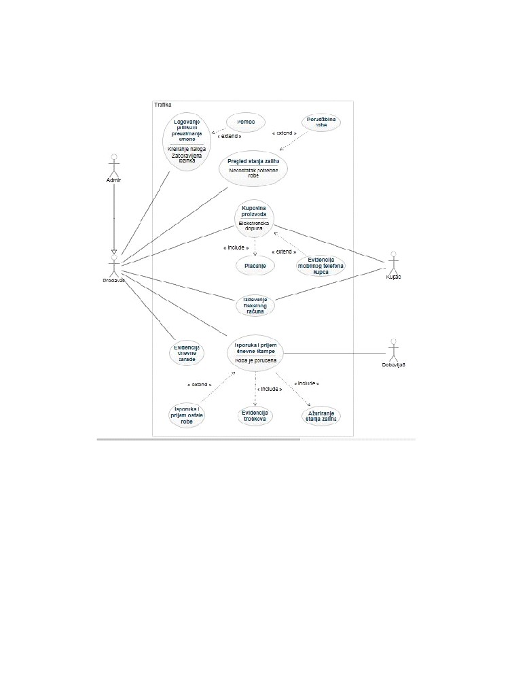
Na osnovu datih opisa slučajeva upotrebe kreiran je dijagram prikazan na Slici 1.
Slika 1 - Dijagram slučajeva upotrebe
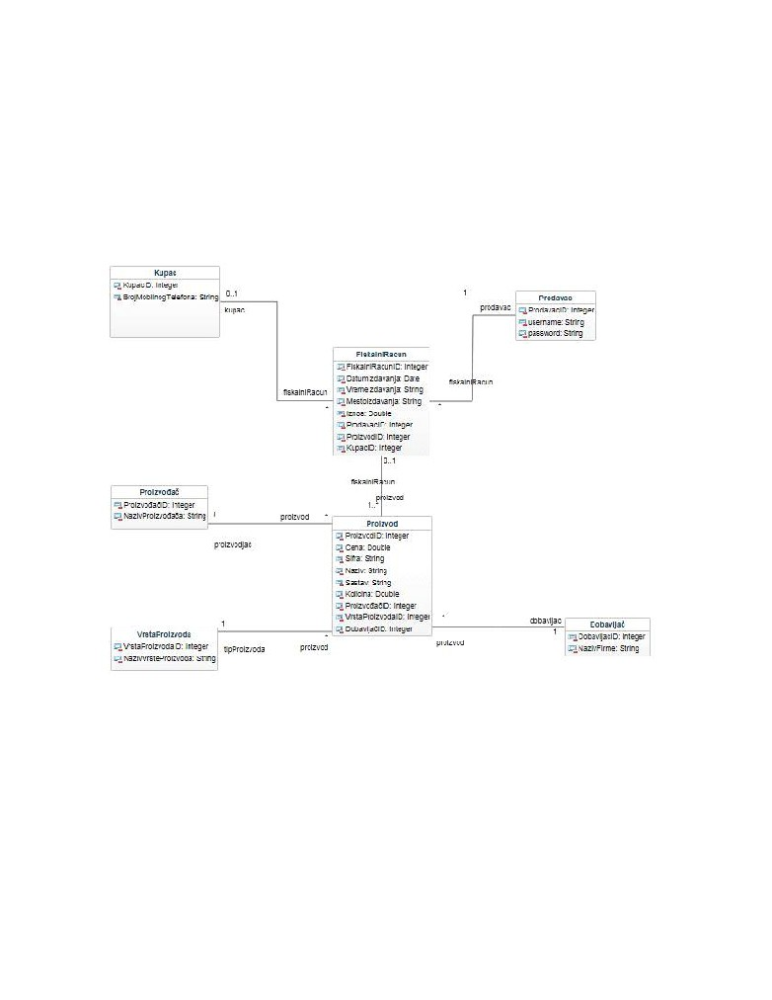
3.2. Dijagram klasa
Nakon uspešno kreiranog dijagrama slučajeva upotrebe, pristupamo izradi dijagrama klasa koji
predstavlja vizuelni prikaz modela statičke strukture sistema. U slučaju primera trafike kreiran
je dijagram klasa prikazan na Slici 2.
Slika 2 - Dijagram klasa
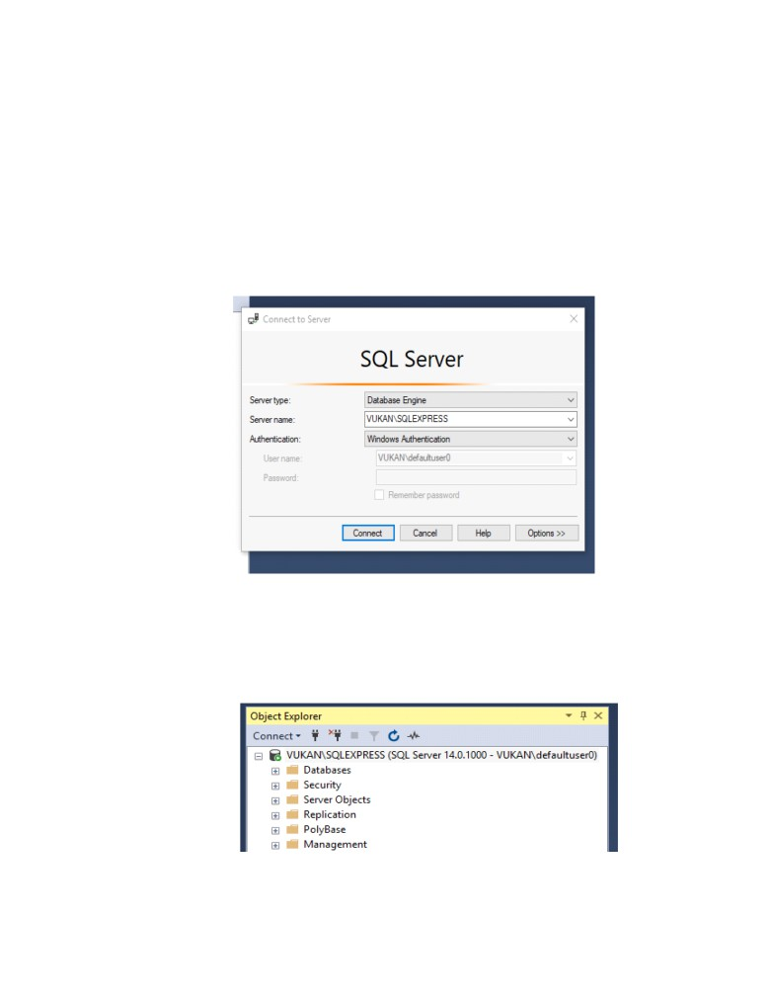
4. Kreiranje baze podataka
Sledeći korak u izradi aplikacije jeste kreiranje baze podataka. Na samom početku, potrebno je
pokrenuti SQL Server Management Studio Express. Kada se to uradi, pojaviće se prozor sa
dijalogom, kao što je prikazano na Slici 3. U prikazanom dijalogu, potrebno je podesiti parametre
Server type i Authentication, kao što je prikazano na Slici 3. Napomena: Server name nije
potrebno menjati, ono predstavlja naziv mašine na kojoj se radi.
Slika 3 - Ostvarivanje konekcije na server
Nakon podešavanja parametara, klikom na dugme Connect, dijalog će se zatvoriti, a otvoriće se novi
prozor koji treba da izgleda kao što je prikazano na Slici 4.
Slika 4 - Izgled Object Explorera nakon ostvarivanja konekcije na bazu
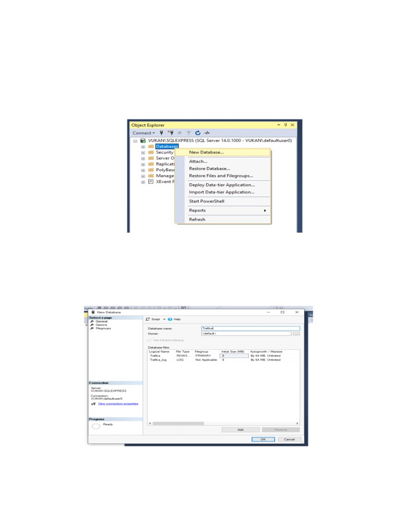
Sada je potrebno kreirati bazu podataka za Studentsku aplikaciju. Baza se kreira tako što se klikne
desnim klikom na Database u treeview-u koji se nalazi sa leve strane prozora u okviru Object
Explorer-a. Otvoriće se lista u kojoj je potrebno selektovati New Database (Slika 5).
Slika 5 - Kreiranje baze podataka
Otvoriće se prozor u kom će se kreirati baza podataka. Potrebno je dati naziv bazi, u ovom slučaju
naziv će biti Trafika. Ostale parametre nije potrebno menjati. Kliknuti OK (Slika 6).
Slika 6 - Podešavanje parametara pri kreiranju baze podataka
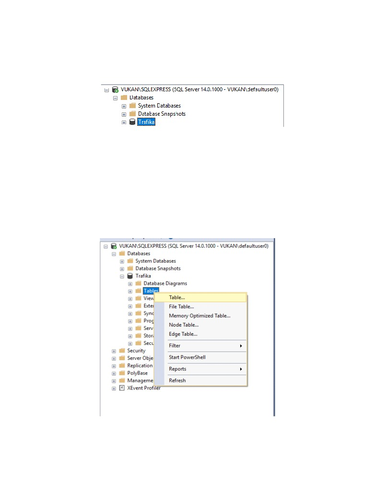
Posle uspešnog kreiranja baze podataka u Object explorer-u, u folderu Database se pojavljuje
kreirana baza podataka Trafika (Slika 7).
Slika 7 - Prikaz kreirane baze podataka
Proširivanjem baze Trafika u stablu Object Explorer-a, pojavljuje se više datoteka. Desnim klikom
kliknuti na datoteku Tables i odabrati Table (Slika 8). Nakon klika na ovu opciju, sa desne strane
otvara se prozor za definisanje tabele, pri čemu će tabela imati predefinisani naziv
Table_1 (Slika 9).
Slika 8 - Kreiranje tabele unutar baze podataka
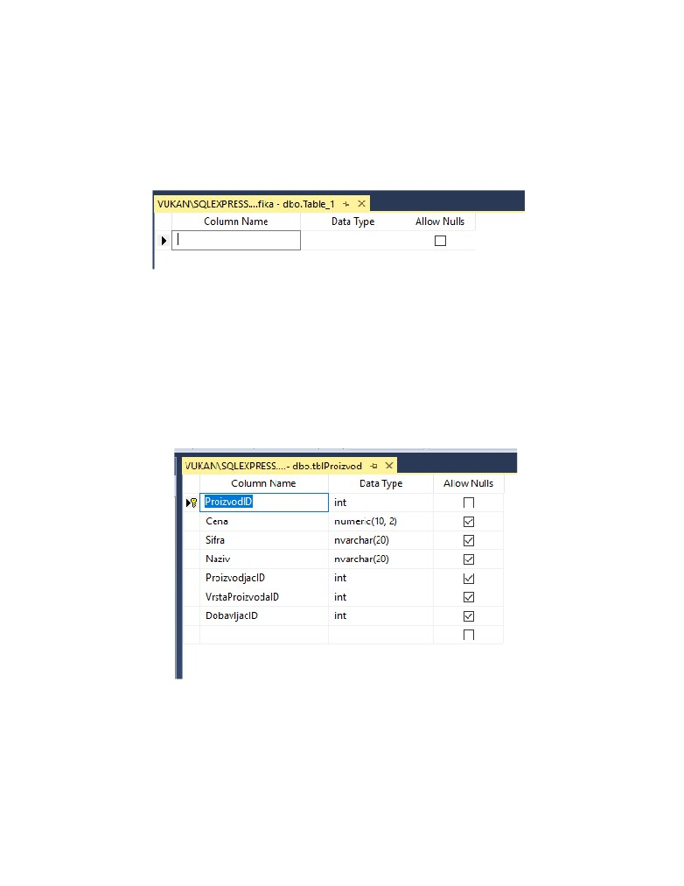
Sledeće što je potrebno uraditi jeste kreirati kolone tabele tako što će se popuniti polja Column
Name, Data Type, Allow Nulls. U kolonu Column Name se upisuje naziv atributa. U koloni Data
Type se bira tip podatka za željeni atribut, dok se u koloni Allow Null selektuje da li određeno polje
može imat null vrednosti. Preporučuje se da Allow Nulls bude check-irano za sve kolone osim za
primarni ključ kako bi se izbegli određeni problemi prilikom upisa rekorda u tabelu (Slika 9).
Slika 9 - Dodavanje obeležja unutar tabele
Svaka tabela neke baze podataka mora posedovati primarni ključ - ID i bilo koja kolona može da se
deklariše kao primarni ključ. U ovom slučaju, kolona ProizvodID treba da se deklariše kao primarni
ključ. Kao takva, ova kolona će zbog svoje jedinstvene vrednosti imati tip podatka int i neće imati
null vrednosti (Slika 10).
Slika 10 - Prikaz kreiranih obeležja
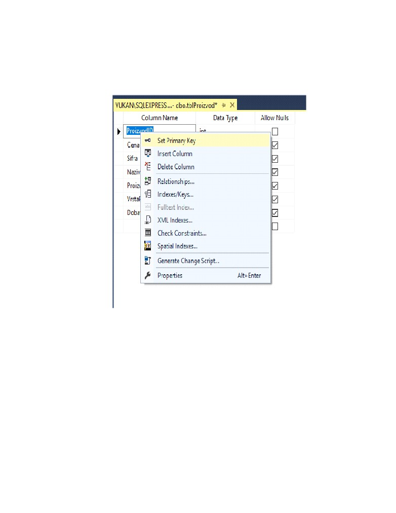
Da bi se kolona ProizvodID deklarisala kao primarni ključ, potrebno je kliknuti desnim klikom na
crnu strelicu koja se nalazi pored naziva ove kolone. Otvoriće se lista u kojoj treba odabrati opciju
Set Primary Key (Slika 11). Ovom komandom se kolona ProizvodID deklariše kao primarni ključ.
Slika 11 - Definisanje primarnog ključa
Da bi SUBP (Sistem za upravljanje bazom podataka) automatski kreirao primarni ključ, potrebno
je u Column Properties pronaći opciju Identity Specification. Proširivanjem opcije Identity
Specification dobija se opcija Is Identity, koju treba promeniti na Yes. Ovde je, takođe, moguće
podesiti parametre Identity Increment i Identity Seed. Identity Increment-om se definiše za koliko
raste sledeća vrednost ključa, Identity Seed od koje vrednosti počinju da se memorišu ključevi (Slika
12).
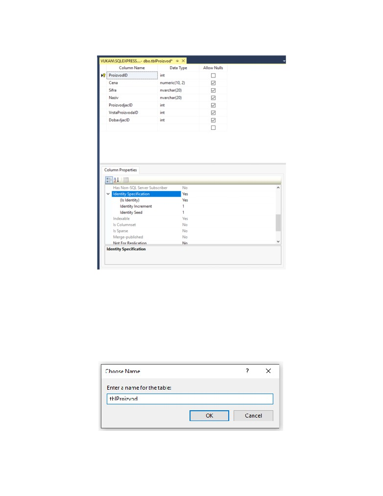
Slika 12 - Podešavanja automatske inkrementacije vrednosti obeležja primarnog ključa
Čuvanje tabele se vrši pritiskanjem tastera Ctrl i S (Strl+S). SQL Server Managament Studio
Express će pitati pod kojim nazivom se želi sačuvati tabela. Naziv tabele se najčešće navodi sa
prefiksom "tbl", u ovom slučaju tblProizvod (Slika 13).
Slika 13 - Čuvanje kreirane tabele
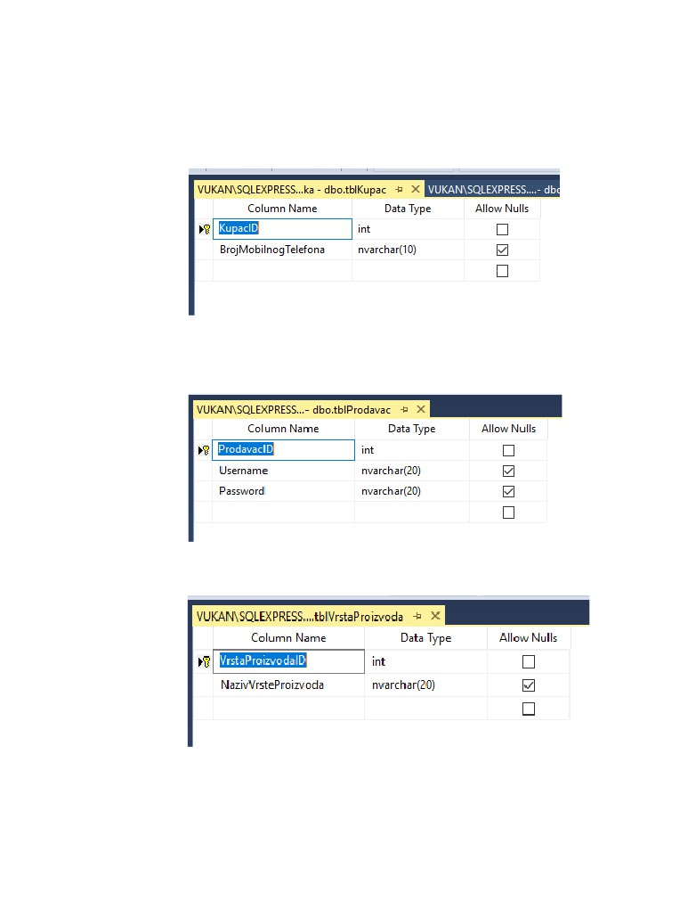
Isti proces bi se trebao ponoviti za kreiranje tabela tblKupac, tblProdavac, tblVrstaProizvoda,
tblProizvodjac, tblDobavljac i tblFiksalniRacun (Slike 14 - 19).
Slika 14 - Kreiranje tabele Kupac
Slika 15 - Kreiranje tabele Prodavac
Slika 16 - Kreiranje tabele VrstaProizvoda
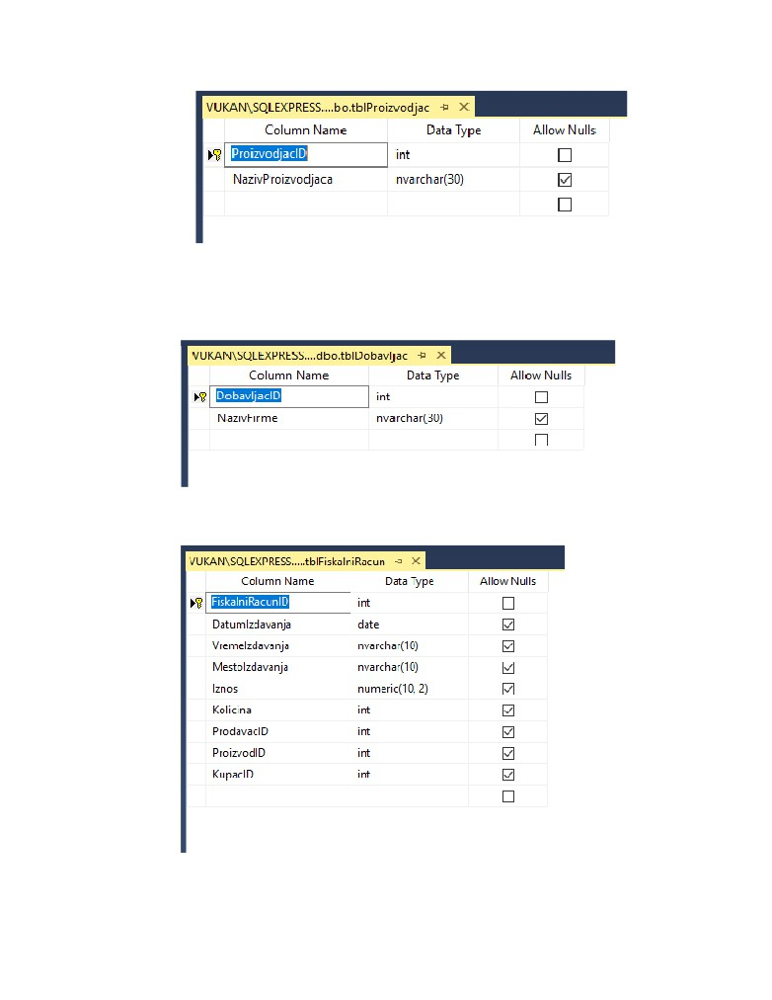
Slika 17 - Kreiranje tabele Proizvodjac
Slika 18 - Kreiranje tabele Dobavljac
Slika 19 - Kreiranje tabele FiskalniRacun
Nakon toga bi u treeview-u koji se nalazi sa leve strane prozora u okviru Object Explorer-a trebala da
se nalazi baza podataka Trafika u kojoj se pored već kreirane tblProizvod nalaze i novokreirane
tabele sa odgovarajućim atributima (Slika 20).
Slika 20 - Object Explorer prikaz kreiranih tabela
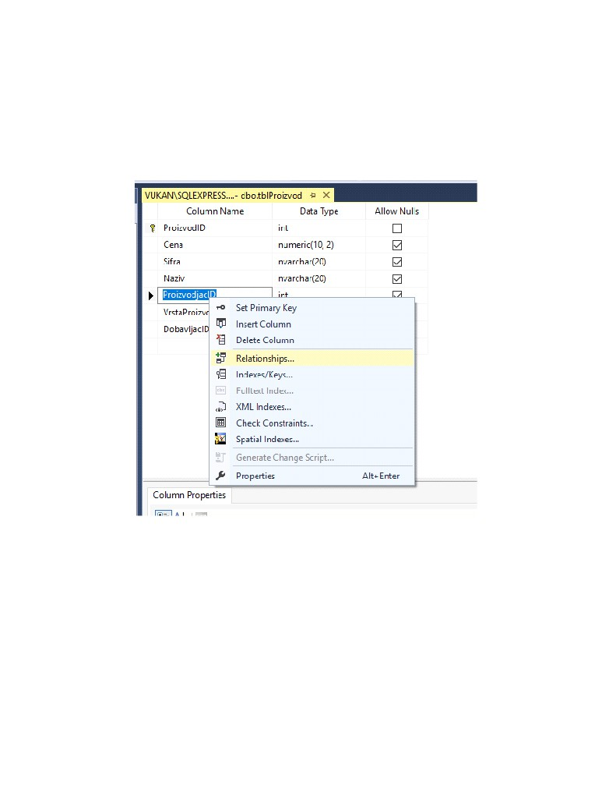
Kao što se može videti na slici 12, u tblProizvod se nalaze tri Foreign key-a (ProizvodjacID,
VrstaProizvodaID i DobavljacID). Prilikom unosa atributa u tabelu tblProizvod potrebno je uneti i
atribute koji imaju nazive ProizvodjacID, VrstaProizvodaID i DobavljacID, a vrednost DataType-a
za njih staviti na int. Zatim je potrebno kliknuti desnim klikom na crnu strelicu koja se nalazi pored
naziva ove kolone. Otvoriće se lista u kojoj treba odabrati opciju Relationships (Slika 21).
Slika 21 - Dodavanje veza
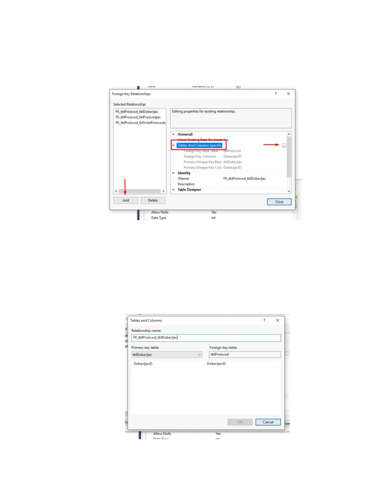
Otvara se prozor Foreign key Relationships (Slika 22) u kojem je potrebno prvo kliknuti na
dugme Add a zatim proširiti polje Tables and Columns Specification i kliknuti na tri tačke koje
se nalaze desno.
Slika 22 - Dodavanje stranog ključa
U otvorenom prozoru Tables and Columns potrebno je u okviru Foreign key table, konkretno iz
tabele tblProizvod, iz padajuće liste izabrati atribut koji smo mi definisali a koji želimo da povežemo
sa drugom tabelom. Zatim u okviru Primary key table biramo tabelu sa kojom vršimo povezivanje i
iz padajuće liste biramo ključ te tabele sa kojim ćemo povezati željeni atribut. Nakon što smo sve
ovo odradili, prozor treba da nam izgleda kao na sledećoj slici (Slika 23).
Slika 23 - Kreiranje veza između tabela
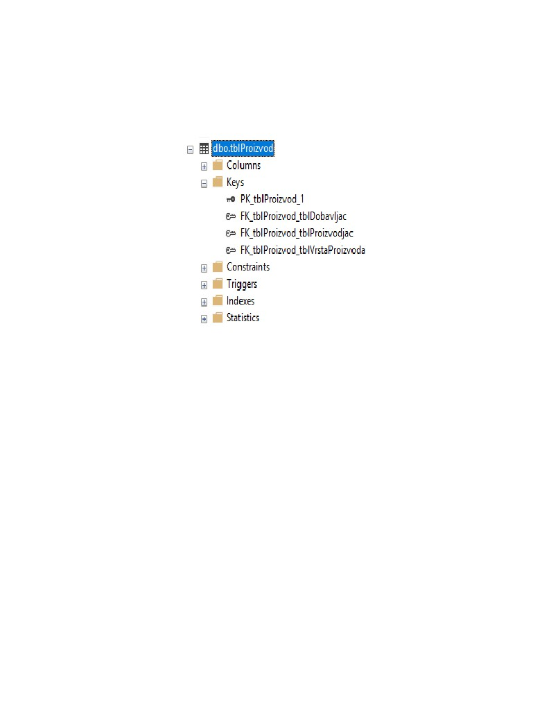
Dodavanjem relationships-a atributima ProizvodjacID, VrstaProizvodaID i DobavljacID u tabeli
tblProizvod oni postaju strani ključevi. Da li smo uspešno odradili povezivanje tabela znaćemo tako
što ćemo proveriti da li se oni nalaze u treeview-u u okviru tabele tblProizvod pod kategorijom Keys
(Slika 24).
Slika 24 - TreeView prikaz kreiranih ključeva
Isti postupak potrebno je ponoviti za sve tabele koje u sebi sadrže strane ključeve koji su primarni
ključevi u drugim tabelama, a to je u našem slučaju još tabela tblFiskalniRacun (ProdavacID,
ProizvodID, KupacID).
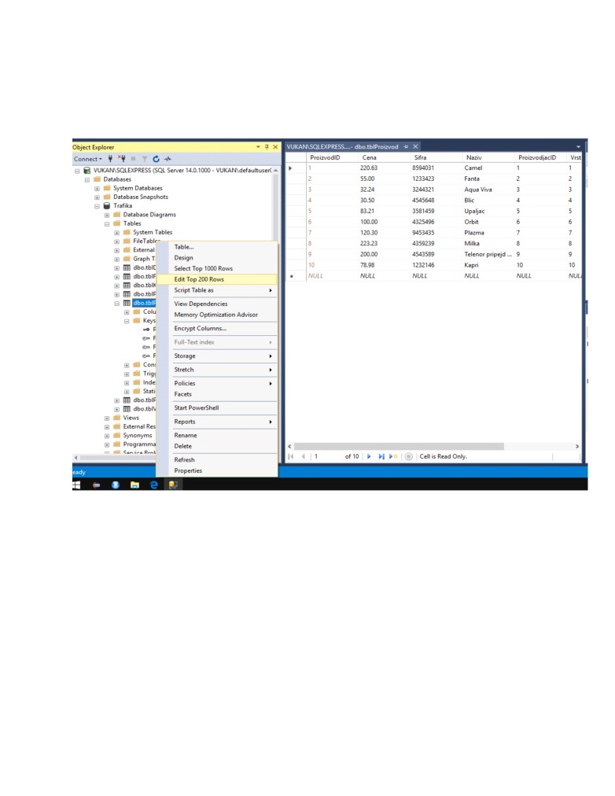
Sada su tabele kreirane i povezane, a dodavanje novih podataka u ovu bazu se može izvršiti desnim
klikom na naziv tabele, gde se iz liste opcija treba odabrati Edit Top 200 Rows (Slika 25).
Slika 25 - Prikaz kreirane tabele i dodavanje podataka
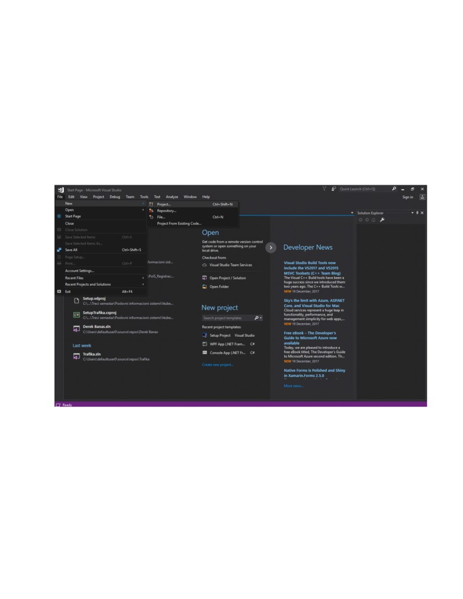
5. Kreiranje studentske WPF aplikacije (desktop
aplikacije)
U okviru ovog poglavlja objasniće se kako se kreira WPF (Windows Presentation Foundation)
aplikacija. Nakon pokretanja Visual Studija potrebno je kliknuti na File meni a zatim odabrati
New Project (Slika 26).
Slika 26 - Kreiranje novog projekta u Visual Studiju
Odabrati Windows Classic Desktop, zatim WPF Application. Navesti ime aplikacije i kliknuti
OK (Slika 27).
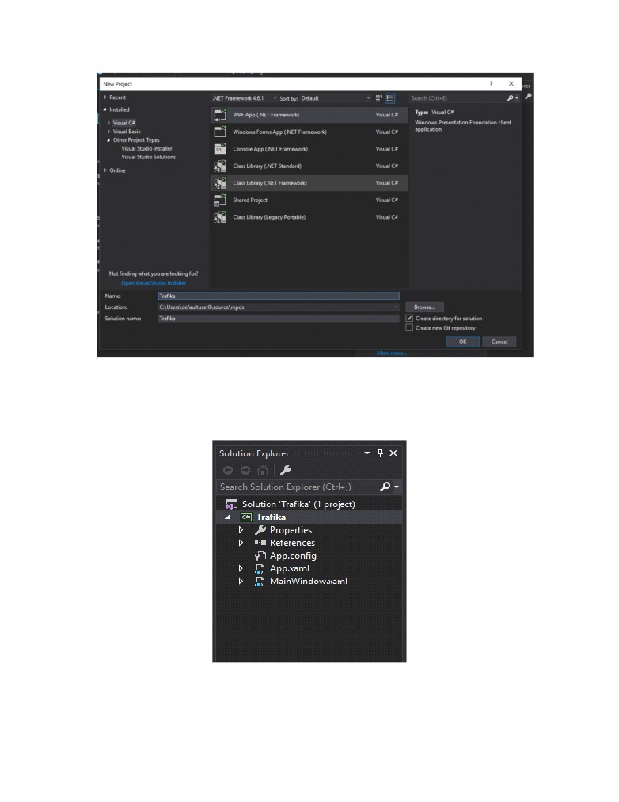
Slika 27 - Kreiranje WPF aplikacije
U Solution Explorer-u će se pojaviti napravljena aplikacija (Slika 28).
Slika 28 - Solution Explorer kreirane WPF aplikacije
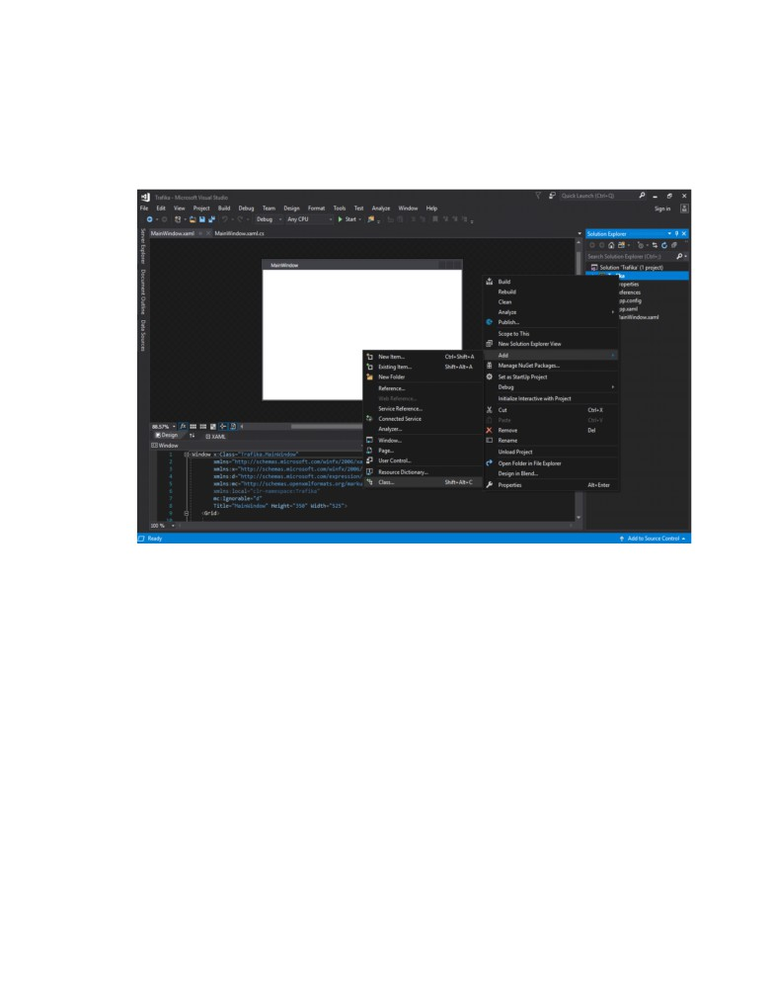
Sledeći korak je kreiranje konekcije u aplikaciji, ka bazi podataka. Za početak, kreira se klasa u
kojoj će se nalaziti statička metoda putem koje će se ostvarivati veza na prethodno kreiranu
bazu. Klasa se kreira desnim klikom na naziv projekta (Trafika), a zatim Add / Class... (Slika
29).
Slika 29 - Kreiranje klase
Novokreiranoj klasi se dodeljuje naziv “Konekcija” i njen sadržaj prikazan je na Slici 30. Na
samom početku uključujemo imenski prostor System.Data.SqlClient. Telo klase sadrži samo
jednu statičku metodu pod nazivom “KreirajKonekciju”, koja će se u kasnijem razvoju
aplikacije pozivati po potrebi odnosno svaki put kada budemo želeli da ostvarimo vezu sa
bazom podataka, stoga je povratni tip ove metode instanca klase SqlConnection. Unutar same
metode prikazana su podešavanja parametara konekcije i to:
• DataSource - naziv servera na kojem je baza podataka smeštena.
• InitialCatalog - naziv baze podataka kojoj želimo da pristupimo.
• IntegratedSecurity - ukoliko se baza nalazi na lokalnoj mašini ovaj parametar postavljamo
na true.
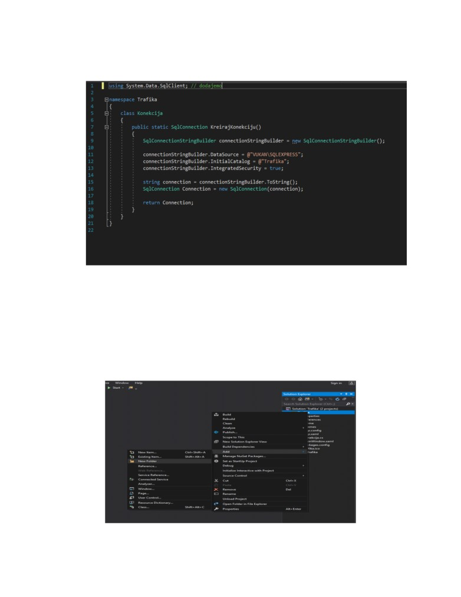
Nakon podešavanja ovih parametara, ceo string prosleđujemo instanci klase SqlConnection.
Slika 30 - Klasa Konekcija
Sledeći korak u izradi aplikacije biće kreiranje formi za dodavanje objekata u bazu podataka.
Kako bi sve forme bile uredno smeštene na jednom mestu, potrebno je kreirati folder pod
nazivom Forme u kom će se nalaziti svih 7 formi za, prethodno kreiranih, 7 tabela u bazi
podataka. Kreiranje foldera se vrši na sličan način kao kreiranje klase, desnim klikom na
projekat, a zatim Add/ New Folder.
Slika 31 - Kreiranje novog foldera
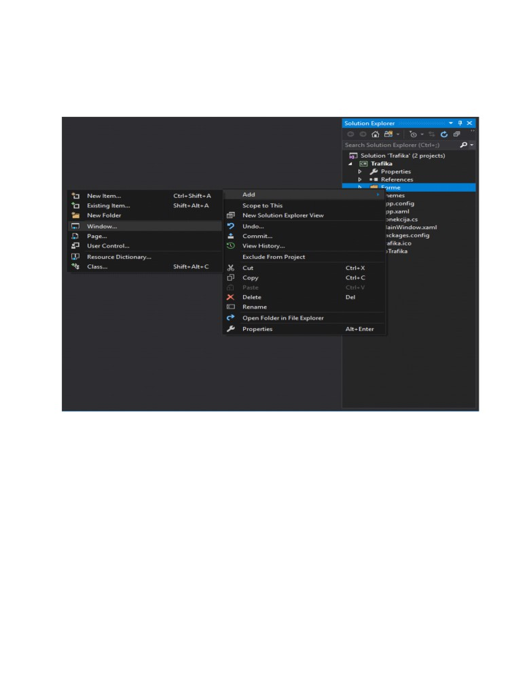
Nakon kreiranja foldera, potrebno je dodati novi prozor za svaku od formi. WPF prozor, unutar
folder, kreira se desnim klikom na folder, a zatim Add/Window (Slika 32).
Slika 32 - Dodavanje formi unutar foldera
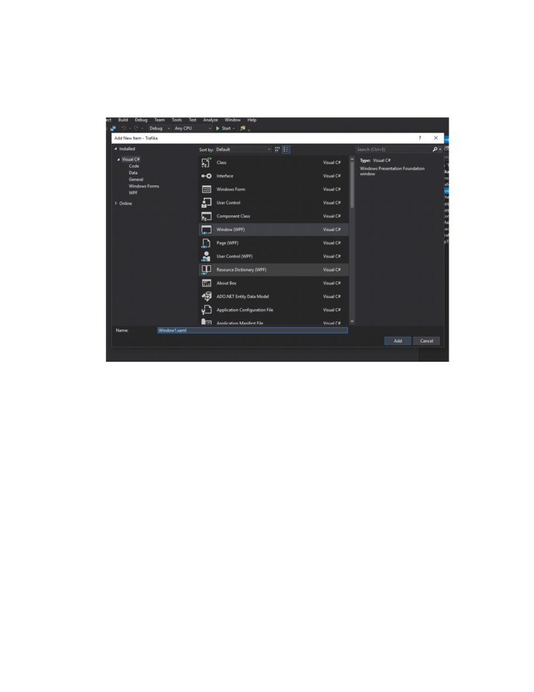
Nakon toga prikazaće se prozor da dodavanje novog Item-a unutar kog je potrebno podesiti
naziv i zatim kliknuti na Add (Slika 33).
Slika 33 - Dodavanje novog prozora
Kada je novi prozor izgenerisan, potrebno je, unutar njega, dodati određene elemente putem
kojih će se ostvarivati potrebne funkcionalnosti. Na levoj strani prozora, klikom na Toolbox,
prikazaće se lista svih ugrađenih WPF komandi (Slika 34). Jednostavnim prevlačenjem tih
komandi na centralni prozor, izgenerisaće se kod u XAML deklarativnom jeziku unutar kojeg
će se vršiti detaljna podešavanja svih komandi unutar prozora (Slika 35).
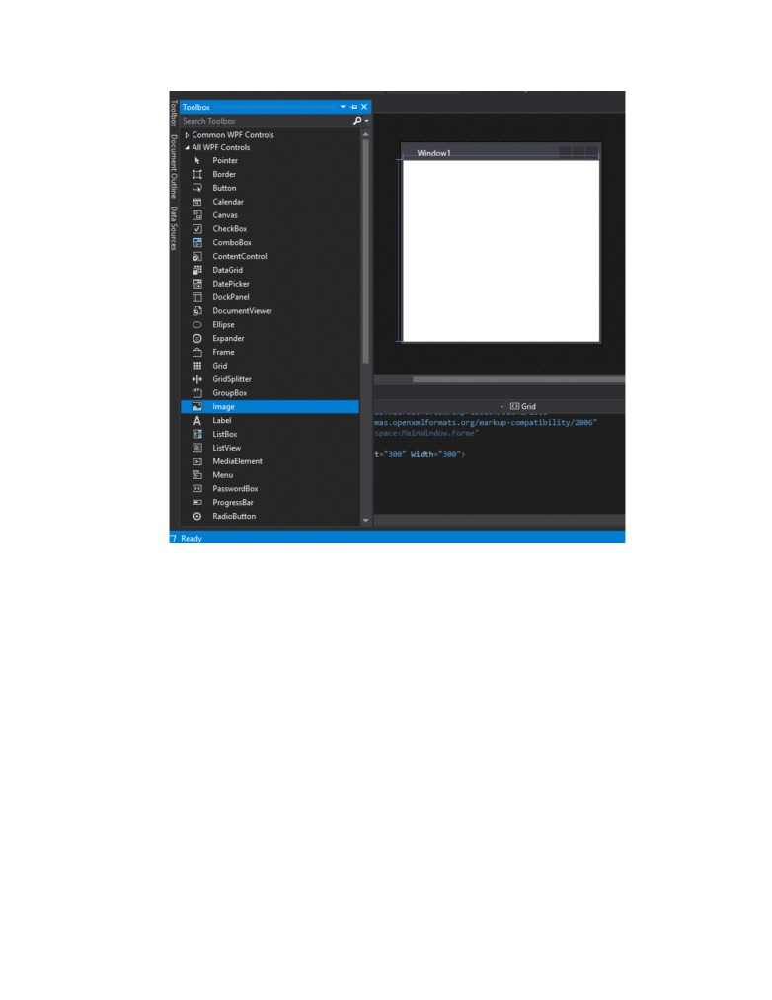
Slika 34 - Dodavanje komandi iz Toolbox-a
Forma za dodavanje novog Prodavca u bazu podataka, treba da sadrži sledeće elemente (Slika
34). Dva osnovna TextBox-ova unutar kojih će biti upisane vrednosti obeležja. Takođe, uz svaki
TextBox, mora postojati naziv (Label) koji će opisivati njegovu namenu. Na kraju, svaka forma
morati imati ugrađeno dugme Sačuvaj, putem kojih će se vrednosti upisivati u bazu, i dugme
Otkaži - koje korisniku omogućava zatvaranje forme (Slika 35). Ove funkcionalnosti dugmića
postižu se klikom miša na odgovarajuće dugme čime se u Code Behind-u generišu metode
btnSacuvaj_Click i btnZatvori.
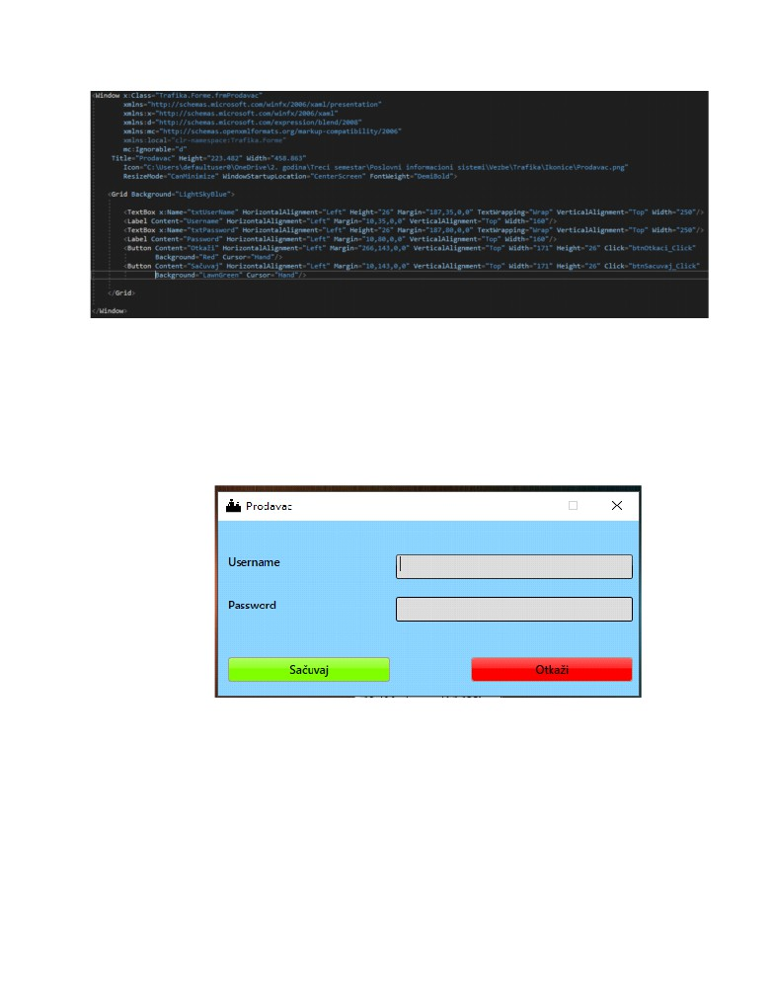
Slika 35 - XAML kod kreiranih komponenti
Vizuelni prikaz forme za unos novog Prodavca, izgledaće kao na Slici 36.
Slika 36 - Vizuelni prikaz forme za dodavanje novog proizvoda
U Code Behind-u ove forme, trebalo bi da se nalazi sledeća poslovna logika (Slika 37). Najpre je
potrebno importovati imenski prostor System.Data.SqlClient. Zatim, potrebno je napraviti novi
objekat SqlConnection klase, putem kojeg će se ostvarivati veza ka bazi podataka nakon klika na
dugme Sačuvaj. Takođe, u konstruktoru ovog prozora poželjno je podesiti metodu Focus(), koja
pozicionira kursor na prvo polje koje korisnik popunjava pri pokretanju forme. U slučaju
prodavca to je tekst polje za unos njegovog Username - a.
Slika 37 - Sadržaj CodeBehind-a forme frmProdavac
Ovakav prikaz pozadinskog koda gotovo je identičan za svaku od 7 kreiranih formi. Ono u čemu
je svaka od ovih formi jedinstvena jeste pozadinska funkcionalnost koja se dešava u trenutku
kada korisnik klikne na dugme Sačuvaj. Na Slici 38 prikazan je sadržaj izgenerisane metode
btn_Sacuvaj_Click . Na samom početku, potrebno je otvoriti konekciju ka bazi podataka. Zatim,
kreira se string koji u sebi sadrži insert into naredbu putem koje se dodaje nove objekat u bazu
podataka. U values ove naredbe prosledjuju se pokupljene unete vrednosti iz TextBox-ova ove
forme. Potrebno je voditi računa da se vrednosti stringova ograde apostrofima. Nakon upešno
napravljene insert komande, ovaj string se prosleđuje objektu klase SqlCommand. Ovaj objekat,
kao parametre prima prethodno kreirani string ali i konekciju putem koje će znati u koju bazu
podataka treba da upiše prosleđeni zapis. Nakon toga, komanda se izvršava putem metode
ExecuteNonQuery(), nakon čega se prozor zatvara. Ovaj deo koda potrebno je ograditi try
blokom iz razloga što postoji mogućnost nastanka greške usled prosleđivanja unosa pogrešnog
tipa podatka od strane korisnika. Kako prilikom ovakvog unosa, program ne bi “pukao”,
potrebno je dodati catch blok unutar kojeg će se “hvatati” izuzetak tipa SqlException. Na kraju,
u finally bloku, potrebno je postarati se da se prethodno otvorena konekcija sigurno zatvori.
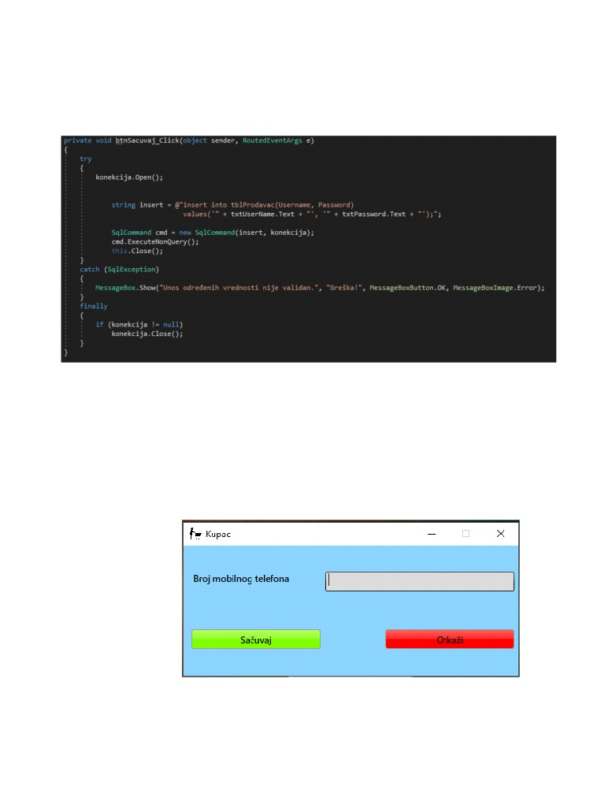
Ukoliko konekcija ostane otvorena, niko drugi neće moći da pristupi bazi podataka na isti način
dok se ova instanca konekcije ne zatvori.
Slika 38 - Sadržaj metode btnSacuvaj_Click za insert novog prodavca
U nastavku će biti prikazan izgled i kod ostalih 6 formi.
Izgled formi za dodavanje kupca, vrste proizvoda, proizvođača i dobavljaća takođe ima veoma
sličan dizajn (Slika 39., Slika 40., Slika 41, Slika 42, Slika 43).
Slika 39 - Dizajn forme za dodavanje kupca
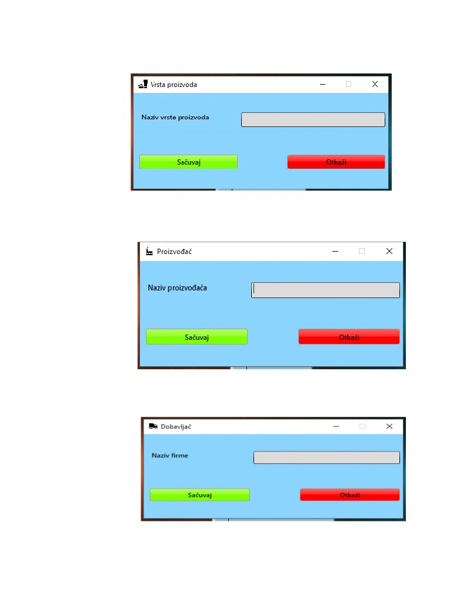
Slika 40 - Dizajn forme za dodavanje nove vrste proizvoda
Slika 41 - Dizajn forme za dodavanje novog proizvođača
Slika 42 - Dizajn forme za dodavanje novog dobavljača
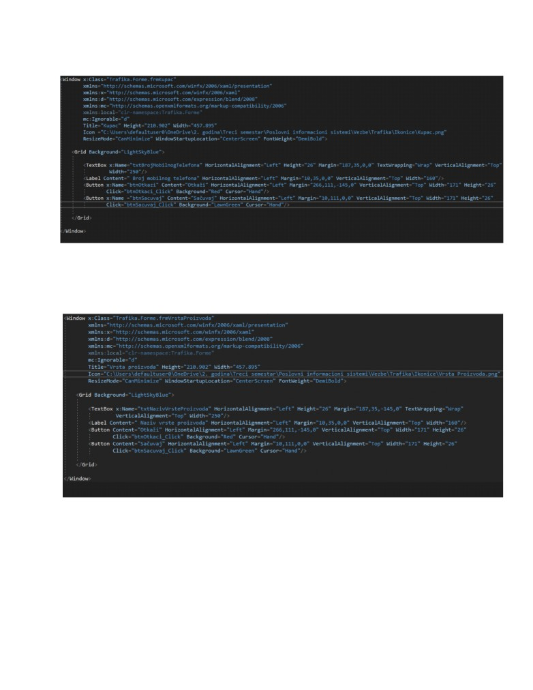
Slika 43 - XAML kod forme za dodavanje novog kupca
Slika 42 - XAML kod forme za dodavanje nove vrste proizvoda
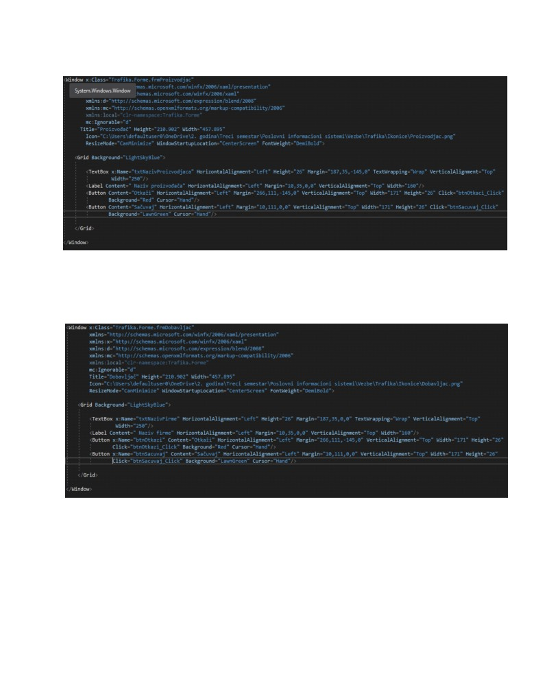
Slika 43 - XAML kod forme za dodavanje novog proizvođača
Slika 44 - XAML kod forme za dodavanje novog dobavljača
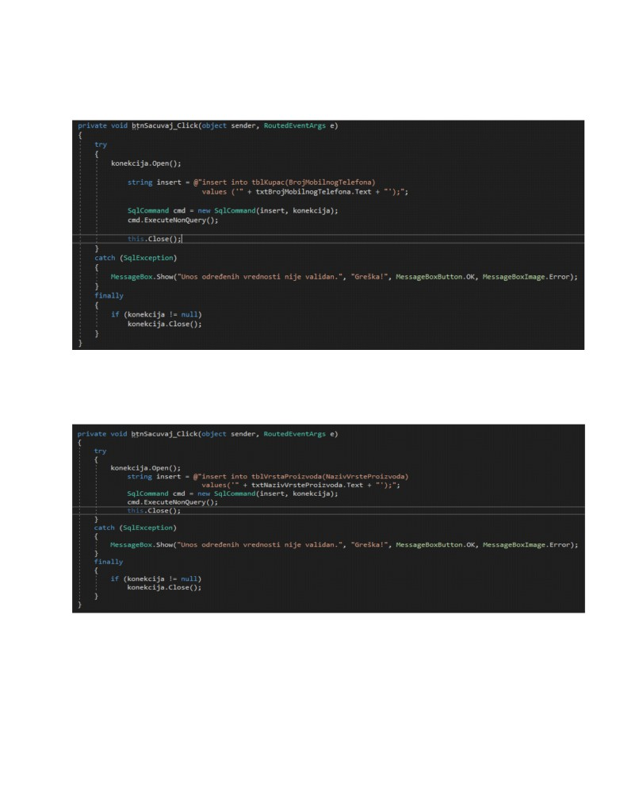
Razlika se ponovo ogleda u insert upitu, smeštenom unutar metode Sačuvaj.
Slika 45 - Sadržaj metode btnSacuvaj_Click za insert novog kupca
Slika 46 - Sadržaj metode btnSacuvaj_Click za insert nove vrste proizvoda
Slika 47 - Sadržaj metode btnSacuvaj_Click za insert novog proizvođača
Slika 48 - Sadržaj metode btnSacuvaj_Click za insert novog dobavljača
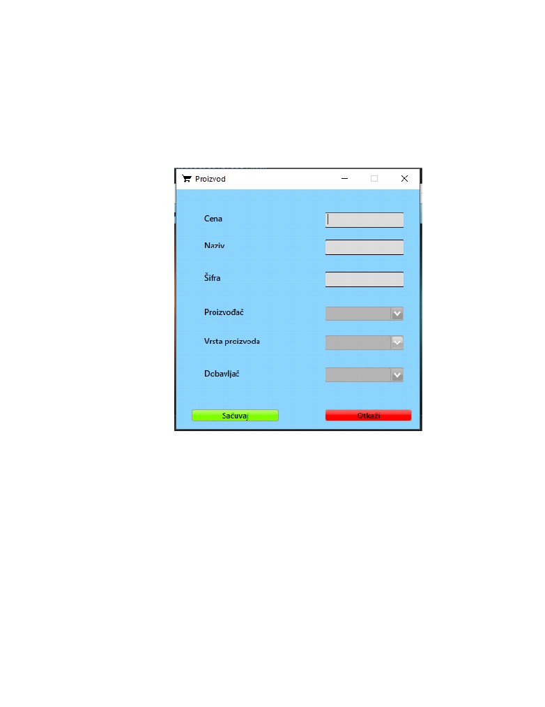
Tabele tblProizvod i tblFiskalniRacun u sebi sadrže strane ključeve drugih tabela na osnovu
kojih se pristupa sadržajima tih tabela. U samoj aplikaciji, potrebno je korisniku obezbediti
vizuelni prikaz željenih obeležja neke od povezanih tabela. U WPF tehnologiji to se
najjednostavniji način postiže korišćenjem ComboBox-a. Vizuelni prikaz forme za dodavanje
novog proizvoda prikazan je na Slici 49.
Slika 49 - Vizuelni prikaz forme za dodavanje novog proizvoda
XAML kod ove forme prikazan je na Slici 50. Prilikom kreiranje novog ComboBox-a, potrebno
je da definišemo DisplayMemberPath, koji predstavlja obeležje povezane tabele koje će se
prikazati u padajućoj listi kada korisnik klikne na taj ComboBox, kao i SelectedValuePath koji
predstavlja obeležje primarnog ključa na osnovu kog će se uneta vrednost iz prikazanog
ComboBox-a povezati sa svojim identifikacionim obeležjem i kao takva proslediti u bazu
podataka.
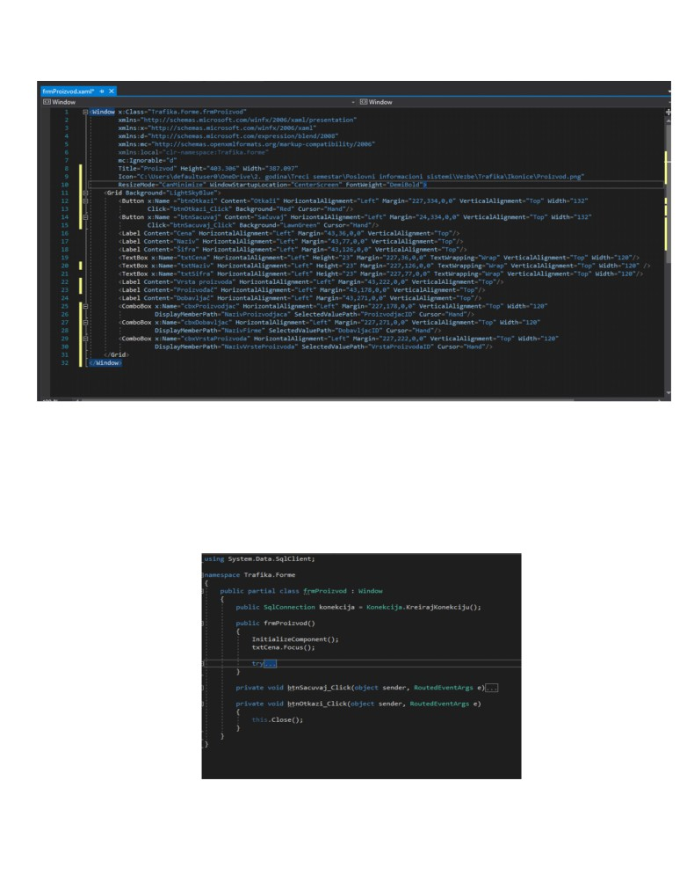
Slika 50 - XAML kod forme za dodavanje novog proizvoda
CodeBehind formi koje u sebi sadrže ComboBox-ove razlikovaće se od ostalih. U
nastavku sagledaćemo svrhu i sadržaj označenog try bloka u konstruktoru ove klase (Slika 51).
Slika 51 - Sadržaj CodeBehind-a forme frmProizvod
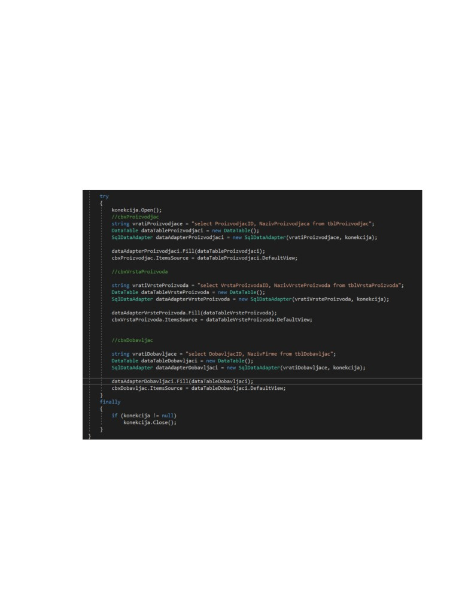
Try blok prikazan na Slici 52, smešten je unutar konstruktora ove klase s obzirom da se,
pri instanciranju novog prozora ove forme, podaci koji će biti prikazani u ComboBox-ovima
moraju negde privremeno uskladištiti. Za postizanje toga, koristi se objekat DataTable klase
koji predstavlja kopiju tabele iz baze podataka (sa obeležjima koja se proslede unutar select
upita), sačuvanu u memoriji aplikacije. Objekat klase DataTable se popunjava pomoću objekta
klase SqlDataAdapter kojem prosleđujemo odgovarajući select upit kao i konekciju ka
odgovarajućoj bazi podataka. Zatim se taj DataTable postavlja kao ItemsSource za odgovarajući
ComboBox. Na samom kraju, u finally bloku, potrebno je obezbediti da se konekcija ka bazi
bezbedno zatvori.
Slika 52 - Sadržaj try - finally bloka unutar konstruktora forme frmProizvod
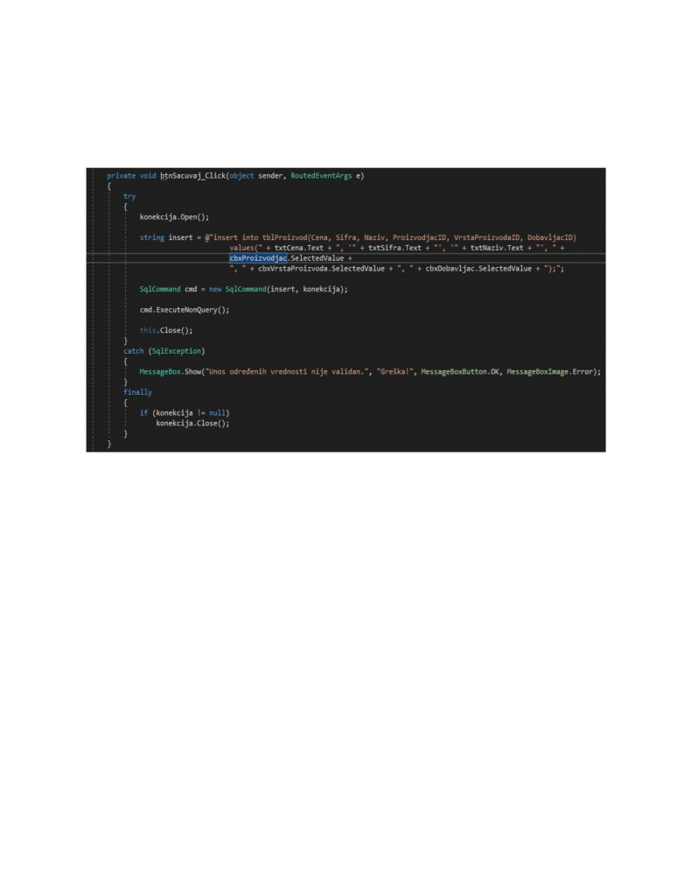
Sadržaj metode koja se aktivira na klik dugmeta Sačuvaj, sličan je kao i u prethodnim formama
s tim što se za razliku od tekstualnih polja, vrednost iz ComboBox-a kupi pomoću property-ja
SelectedValue (Slika 53).
Slika 53 - Sadržaj metode btnSacuvaj_Click za insert novog proizvoda
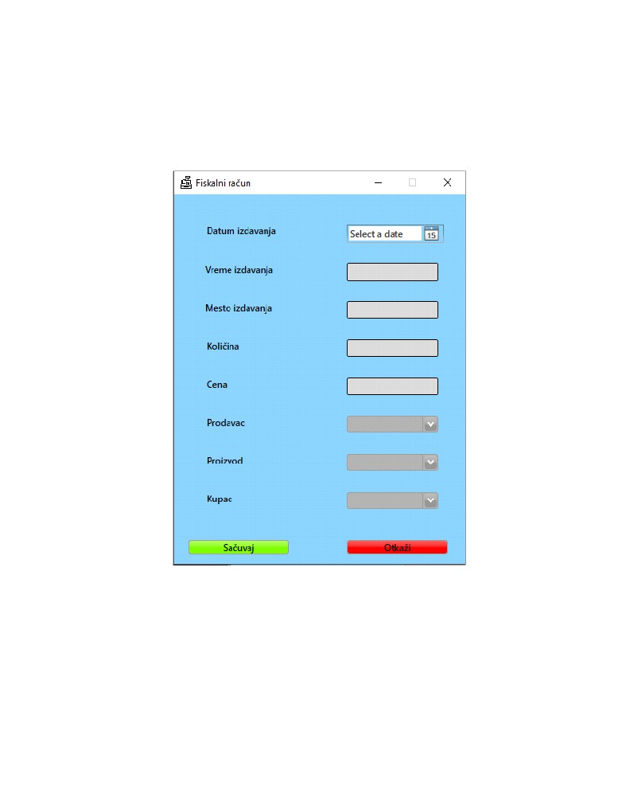
Poslednja forma koju je potrebno kreirati je forma za dodavanje novog Fiskalnog računa u bazu
podataka, koja je veoma slična formi za dodavanje novog Proizvoda. Na Slici 54. prikazan je
njen sadržaj koji se sastoji od po četiri TextBox-a i tri ComboBoxa, i jednog DatePicker- a.
XAML kod ove forme prikazan je na Slici 55.
Slika 54 - Vizuelni prikaz forme za dodavanje novog fiskalnog računa
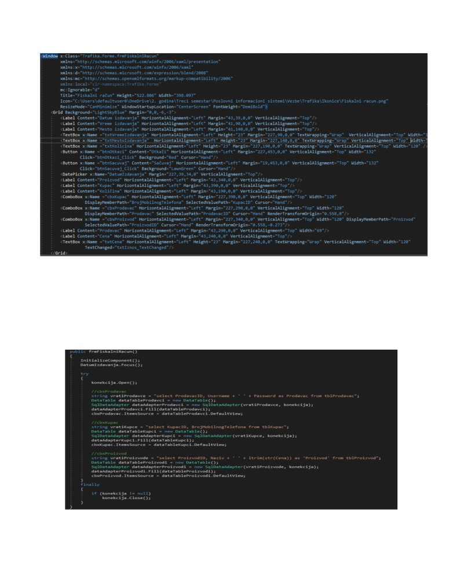
Slika 55 - XAML kod forme za dodavanje novo fiskalnog računa
Konstruktor ove forme, prikazan na Slici 56, u sebi sadrži tri DataTable-a, koji snabdevaju
podacima tri ComboBox-a.
Slika 56 - Konstruktor forme za dodavanje novog fiskalnog računa
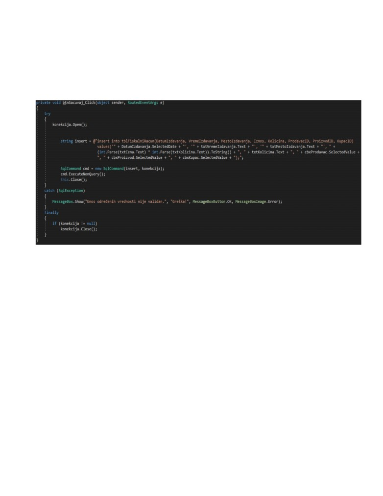
Metoda za čuvanje zapisa, odnosno njegovo prosleđivanje u bazu podataka, funkcioniše na
identintičan način kao i kod prethodnih formi, s’tim što se vrednost izabrana vrednost datuma iz
komande DatePicker ubacuje u select komandu pomoću property-ja SelectedDate (Slika 57).
Slika 57 - Sadržaj metode btnSacuvaj_Click za dodavanje novog fiskalnog računa
Nakon kreiranja formi za svaku od tabela, potrebno je nešto slično napraviti i za glavni (Main)
prozor. Main prozor predstavlja prvi, inicijalni, kontakt korisnika sa aplikacijom i ujedno i bazni
prozor iz kojeg će se otvarati prethodno kreirane forme i u koji će se korisnik vraćati nakon
zatvaranja tih formi. Na njemu bi trebalo da se nalazi dugme za svaku od 7 kreiranih tabela u
bazi, čijim će se klikom, na sredini forme iščitavati ti podaci. Takođe, klikom na dugme
određene tabele, potrebno je da se korisniku obezbede dugmići za Dodavanje, Izmenu i Brisanje
prikazanog sadržaja. Dodavanjem odgovarajućih funkcionalnosti tim dugmićima u okviru
glavne forme, obezbediće se izvršavanje osnovnih CRUD operacija, što je i bio cilj ovog
zadatka. Prikaz izgleda ove forme vidimo na Slici 58.
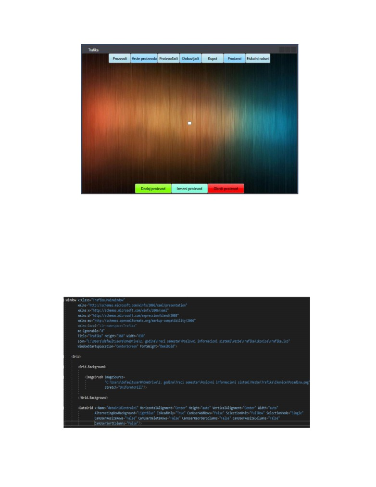
Slika 58 - Vizuelni prikaz glavnog prozora
U nastavku, bliže ćemo sagledati XAML kod ove forme.
Na samom početku, potrebno je definisati centralni DataGrid u okviru kojeg će biti ispisani
učitani podaci iz baze. Podešavanja ovog grida takođe su prikazana u okviru Slike 59.
Slika 59 - XAML kod centralnog grid-a
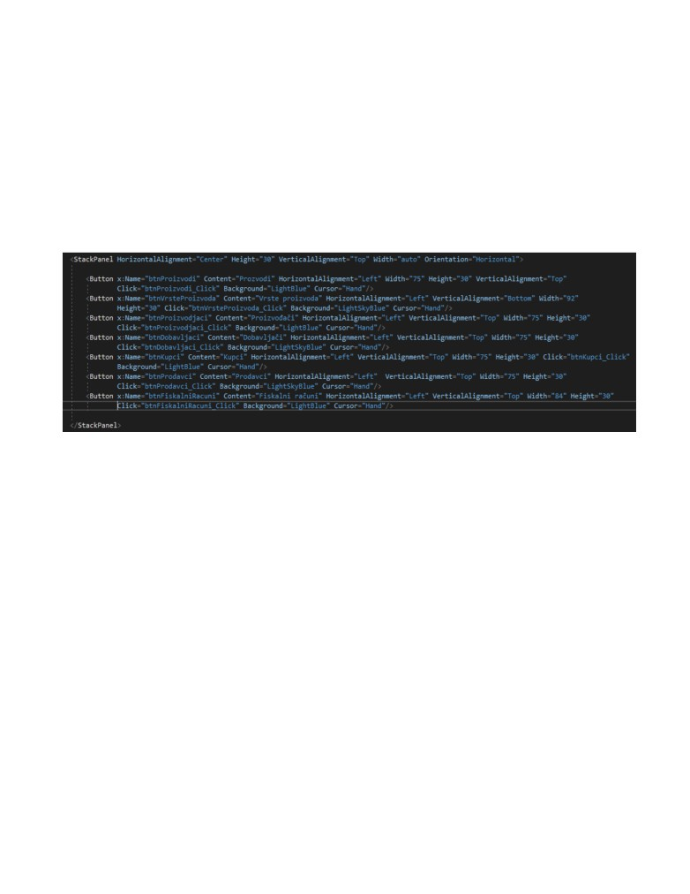
Kako bi elementi unutar ovog prozora bili uredno raspoređeni, koristiće se poseban panel za
njihovo smeštanje - StackPanel. U okviru gornjeg StackPanel-a (Slika 60.), biće smešteni
dugmići za izlistavanje tabela na centralnom gridu. Potrebno je podesiti poravnanja kao što je
prikazano na slici, a zatim izgenerisati metode koje će sprovoditi odgovarajuće akcije klikom na
to dugme, a čija će implementacija biti dodata nešto kasnije.
Slika 60 - Gornji StackPanel glavnog prozora
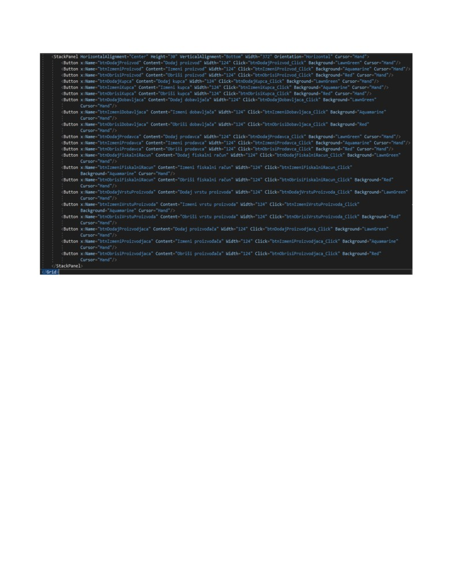
Slika 61 - Donji StackPanel glavnog prozora
Na Slici 61, vidimo prikaz donjeg StackPanel-a u okviru kog su kreirani dugmići za Dodavanje,
Izmenu i Brisanje zapisa iz svake od posebnih tabela, i za svaki od dugmića kreirana je metoda
koja će obavljati neku funkcionalnost klikom na to dugme. Prilikom kreiranja ovog
StackPanela, potrebno je obratiti pažnju na širinu i visinu Panel-a ali i svakog posebnog dumeta.
U okviru širine StackPanel-a, potrebno je da se nađu tačno tri dugmeta za odgovarajuću formu.
Takođe, visina StackPanel-a treba da bude jednaka visini dugmeta. Na ovaj način, dugmići će
biti preklopljeni jedni preko drugih i kasnije će se prikazivati u zavisnosti od toga koje nam je
dugme potrebno. Naravno, ovo je samo jedno od dizajerskih rešenja za ovakav raspored
dugmića i nije nužno pridržavati se istog prilikom kreiranja i rasporeda ovih komponenti u
XAML kodu.
U nastavku će biti prikazan CodeBehind sadržina glavnog prozora gde je smešten najveći deo
poslovne logike.
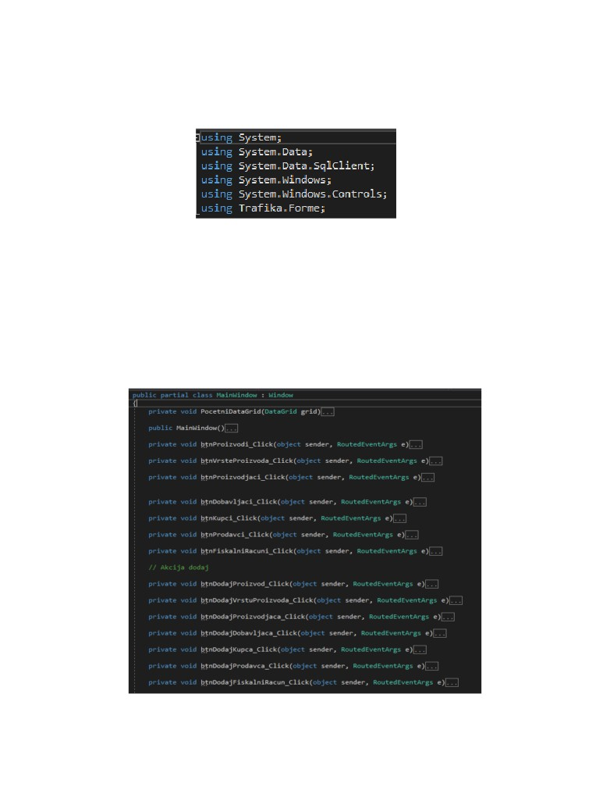
Na samom početku, potrebno je importovati odgovarajuće imenske prostore kao što je prikazano
na Slici 62.
Slika 62 - Imenski prostori za glavni prozor
Za početak, sadržina glavnog prozora trebalo bi da izgleda kao na Slici 63. Sadržaće instancu
konekcije kao bazi podataka, metodu za popunjavanje početnog grida pri pokretanju prozora,
konstruktor za kreiranje novog prozora kao izgenerisane metode iz XAML koda, putem kojih
će se, klikom na odgovarajuće dugme, obavljati određene funkcionalnosti.
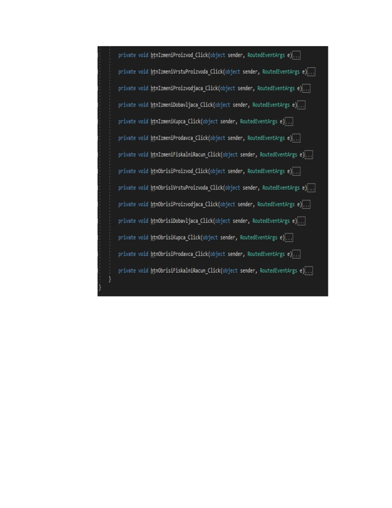
Slika 63 - Sadržaj CodeBehind-a glavnog prozora
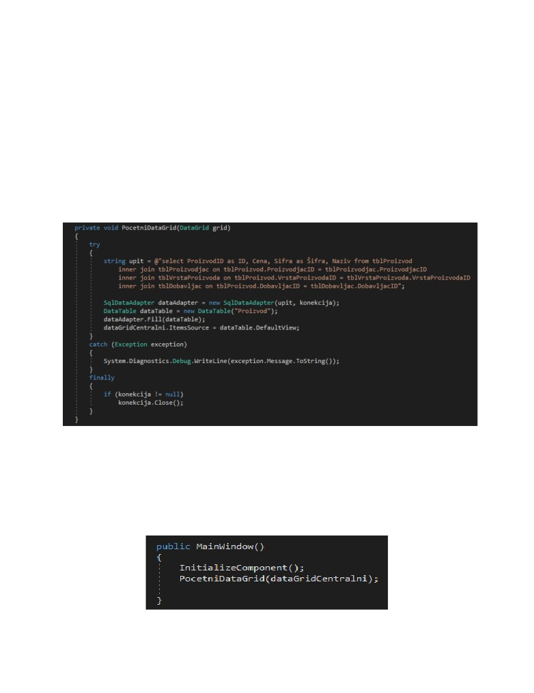
Nakon instanciranja konekcije, sledeća stvar je kreiranje metode koja će popunjavati početni
DataGrid pri kreiranju novog prozora. U ovom primeru, tabela Proizvod će biti podrazumevana
tabela, odnosno tabela čiji će se prikaz generisati pri pokretanju ovog prozora. Na osnovu toga,
potrebno je kreirati odgovarajući Select upit koji će izlistavati, korisniku bitne informacije o
svakom proizvodu. U ovom slučaju, nakon otvaranja konekcije, prikazani upit se kreira na
osnovu povezivanja 4 tabele iz baze podataka (tblProizvod, tblProizvodjac, tblVrstaProizvoda i
tblDobavljac). Zatim, na isti način kao kod popunjavanja ComboBox-ova pri instanciranju
prozora neke od formi, ovi podaci se smeštaju u odgovarajući DataSet kojeg zatim popunjava
SqlDataAdapter. Razlika je u tome što, ove podatke, prosledjujemo kao ItemsSource gridu
(parametru ove metode), umesto ComboBox-u kao u prethodno objašnjenom primeru (Slika 64).
Slika 64 - Sadržaj metode PocetniDataGrid
Sadržaj konstruktora ovog prozora je prilično jednostavan. Prilikom instanciranja novog
prozora, pomoću prethodno kreirane metode, popunjava se CentralniGrid (Slika 65).
Slika 65 - Konstruktor glavnog prozora
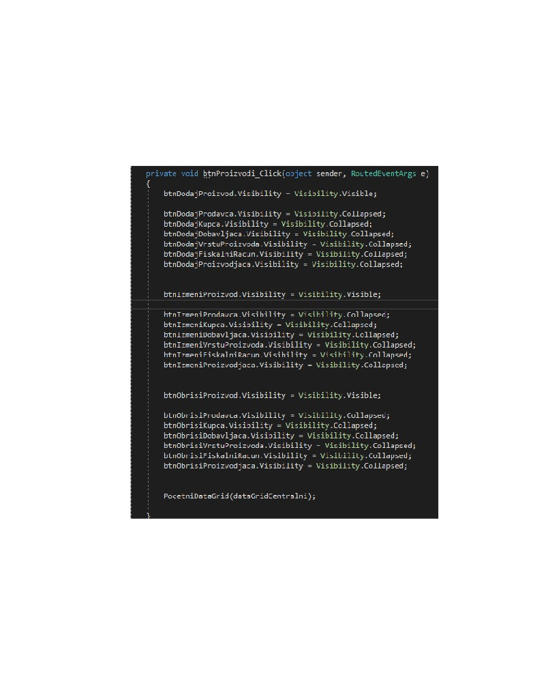
Sledi pregled svake od posebnih metoda vezanih za klik na dugme koje služi za ispis podataka iz
tabele na centralnom gridu. Prva, stvar koju ova metoda treba da obezbedi jeste da se, pored
ispisa podataka iz baze, omogući prikaz dugmića za Dodavanje, Izmenu i Brisanje podataka.
Tako nešto postiže se pomoću komand Visibility, na način prikazan na Slici 66. Za ispis
podataka o proizvodima, koristiće se prethodno kreirana metoda PocetniDataGrid kojoj se kao
argument prosleđuje kreirani CentralniGrid.
Slika 66 - Sadržaj metode btnProizvodi_Click
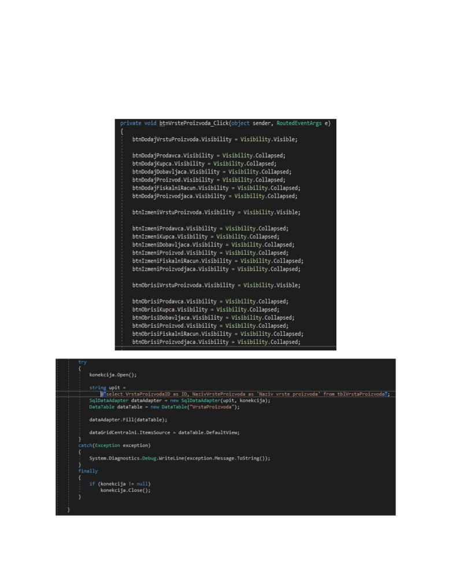
Ispis podataka iz preostalih 6 tabela, vrši se na gotovo identičan način kao za tabelu Proizvod, sa
tom razlikom da će se Select upit pisati direktno u metodi. Na ostalim slikama, prikazani su
ispisi i za ostalih 6 tabela: Vrste proizvoda (Slika 67), Proizvođači (Slika 68.), Dobavljači (Slika
69), Kupci (Slika 70), Prodavci (Slika 71) i Fiskalni Računi (Slika 72).
Slika 67 - Sadržaj metode btnVrsteProizvoda_Click
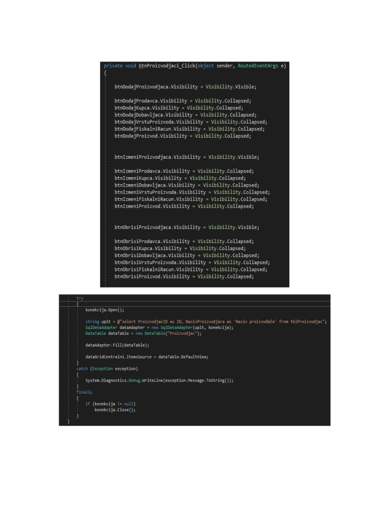
Slika 68 - Sadržaj metode btnProizvodjaci_Click
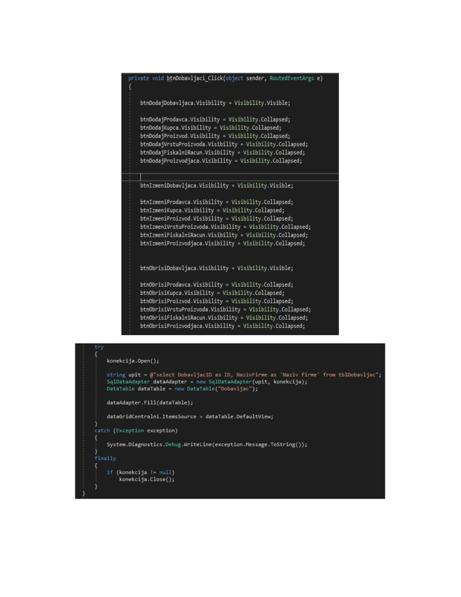
Slika 69 - Sadržaj metode btnDobavljaci_Click
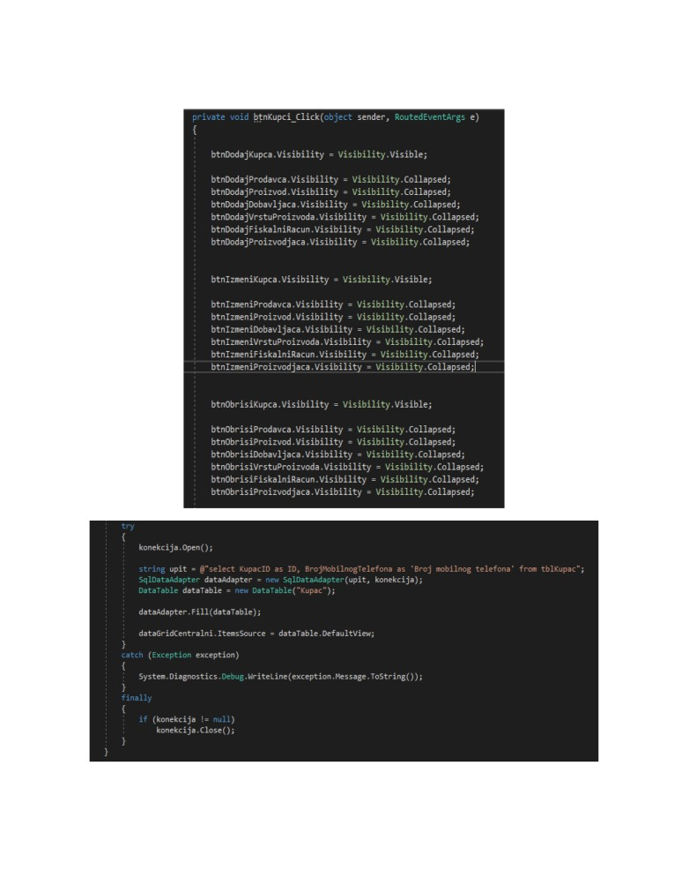
Slika 70 - Sadržaj metode btnKupci_Click
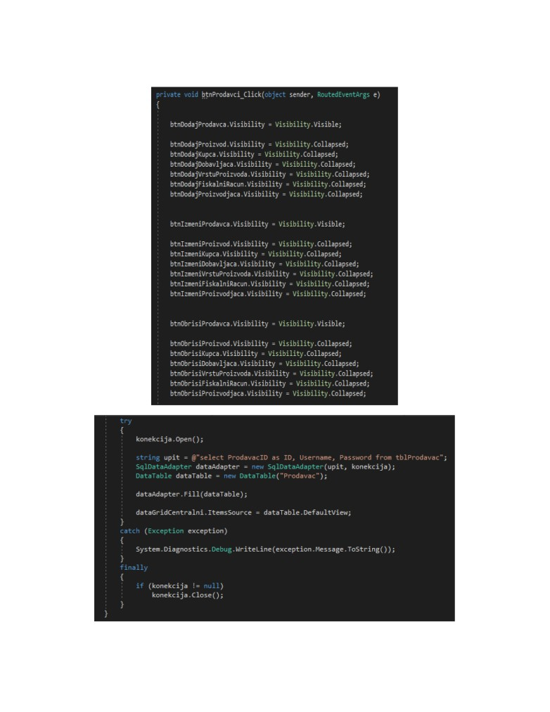
Slika 71 - Sadržaj metode btnProdavci_Click
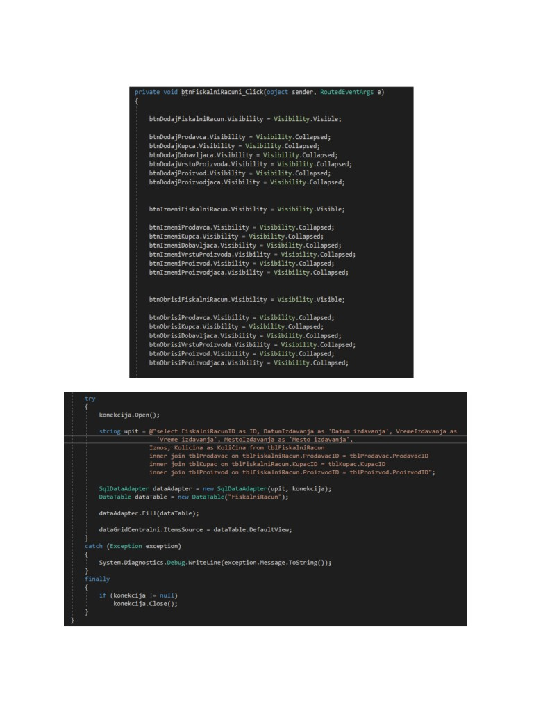
Slika 72 - Sadržaj metode btnFiskalniRacuni_Click
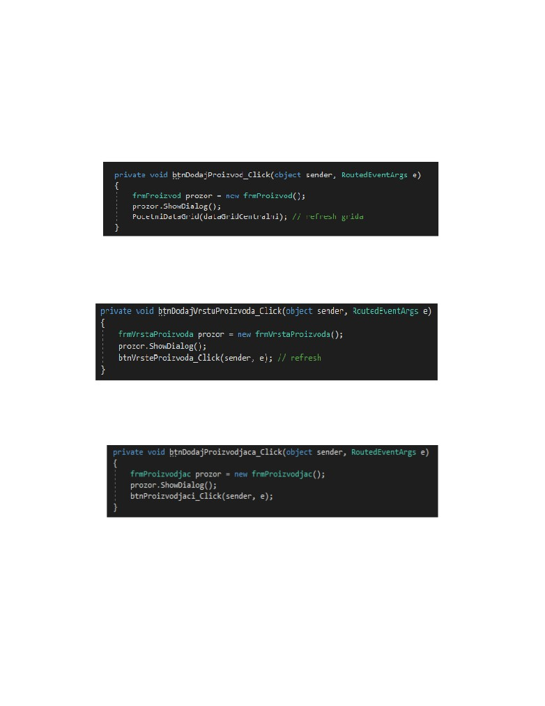
Sadržaj metoda generisanih na klik dugmeta Dodaj je poprilično jednostavan. Pri kliku
na to dugme, instancira se prozor odgovarajuće forme i prikazuje korisniku na ekranu.
Nakon zatvaranja tog prozora forme, osvežava se centralni grid sa aktuelnim podacima
nakon eventualnog dodavanja novog zapisa u bazu. Na narednim slikama prikazan je
sadržaj metode za dodavanje za svih 7 tabela.
Slika 73 - Sadržaj metode btnDodajProizvod_Click
Slika 74 - Sadržaj metode btnDodajVrstuProizvoda_Click
Slika 75 - Sadržaj metode btnDodajProizvodjaca_Click
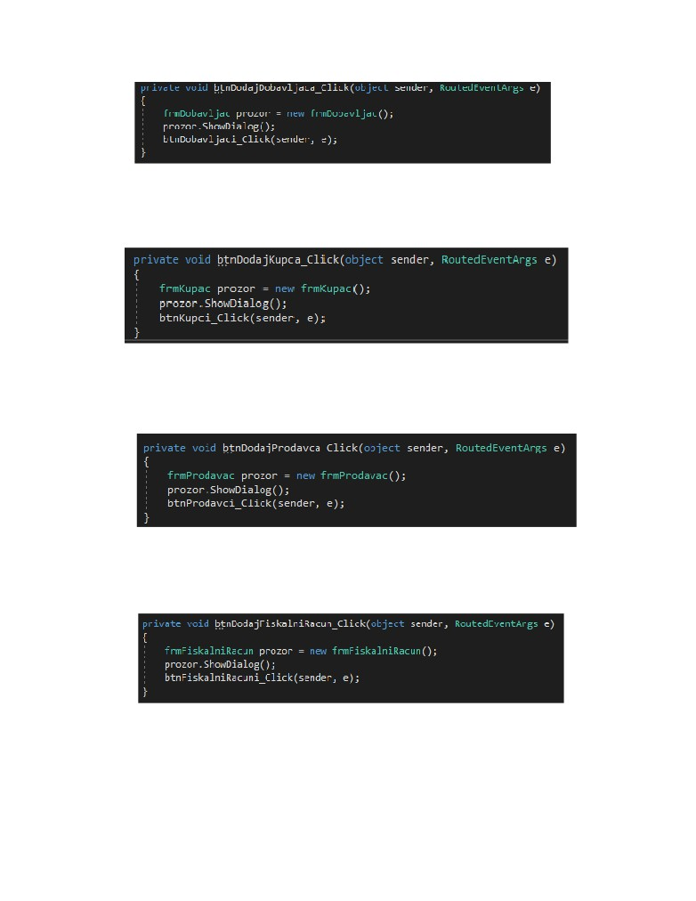
Slika 76 - Sadržaj metode btnDodajDobavljaca_Click
Slika 77 - Sadržaj metode btnDodajKupca_Click
Slika 78 - Sadržaj metode btnDodajProdavca_Click
Slika 79 - Sadržaj metode btnDodajFikslaniRacun_Click
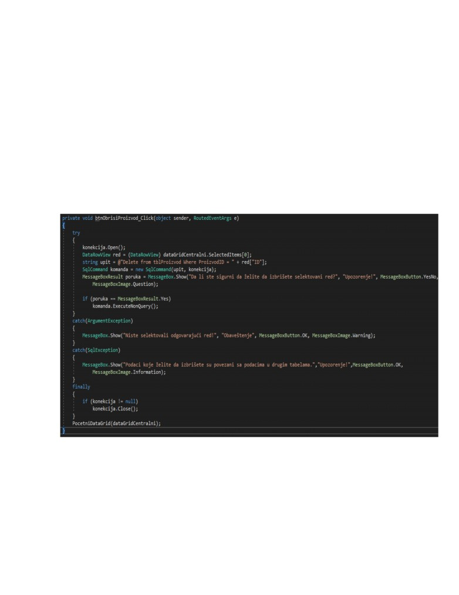
Brisanje zapisa iz baze podataka obavlja se putem klika na dugme Obriši na način prikazan na
Slici 80. Nakon otvaranja konekcije, kreira se objekat klase DataRowView koji u sebi čuva
informaciju o indeksu reda koji je korisnik prethodno selektovao. Nakon toga kreira se Delete
SQL komanda putem koje će se u samoj bazi obrisati željena stavka. Pre samog izvršavanja
komande, kreira pred korisnikom se pojavljuje dijalog prozor (MessageBox) putem kojeg on
potvrđuje ili odustaje od brisanja. Dva osnovna izuzetka koja se ovde mogu javiti su:
ArgumentOutOfRange i SqlException. Prvi se javlja ukoliko korisnik nije selektovao ni jedan
red a pritisnuo je dugme za brisanje, a drugi ukoliko pokuša da obriše enitet iz tabele čiji je
primarni ključ distribuiran u nekoj od drugih tabela. Nakon toga, konekcija se zatvara i početna
strana osvežava sa izmenjenim podacima.
Slika 80 - Sadržaj metode btnObrisiProizvod_Click
Na ostalim slikama, prikazana su brisanja zapisa i iz ostalih 6 tabela: Vrste proizvoda (Slika 81),
Proizvođači (Slika 82), Dobavljači (Slika 83), Kupci (Slika 84), Prodavci (Slika 85) i Fiskalni
računi (Slika 86).
Slika 81 - Sadržaj metode btnObrisiVrstuProizvoda_Click
Slika 82 - Sadržaj metode btnObrisiProizvodjaca_Click
Slika 83 - Sadržaj metode btnObrisiDobavljaca_Click
Slika 84 - Sadržaj metode btnObrisiKupca_Click
Slika 85 - Sadržaj metode btnObrisiProdavca_Click
Slika 87 - Sadržaj metode btnObrisiFiskalniRacun_Click
Za modifikaciju podataka, kao i za dodavanje, potrebno je da postoji odgovarajuća forma u koju
će korisnik menjati odnosno unositi željene vrednosti. U ovom primeru, za svaku od tabela već je
kreirana forma putem koje se novi zapisi upisuju u bazu podataka.
Kako ne bismo morali da kreiramo novu formu specijalno za modifikaciju podataka može se
iskoristiti postojeća za dodavanje s tim što će jedina razlika biti u tome koju akciju izvršava
dugme Sačuvaj te forme kada ga korisnik klikne. Na samom početku potrebno je, u okviru
glavnog prozora deklarisati dve promenljive (Slika 88). Prva je tipa boolean i koristiće se kao
uslov koji će dugmetu Sačuvaj govoriti da li je potrebno podatke upisati u bazu kao novi entitet
ili izmeniti. Druga je tipa object i služi za pamćenje vrednosti selektovanog reda kada iz glavnog
prozora pređemo u neku drugu formu.
Slika 88 - Deklaracija promenljivih
Na Slici 89 prikazana je metoda za izmenu proizvođača. Na samom početku, deklarisana
promenljiva se postavlja na true. Nakon toga instancira se prozor njene forme i otvara
konekcija. Pomoću DataRowView objekta, kao i kod brisanja, pamti se koji je red je selektovan.
Razlika je u tome što se sada, u drugu promenjivu (pomocniRed) dodaje ta vrednost kako bi se
iskoristila u drugoj formi. Nakon toga se, pomoću Select upita kojem se u Where uslovu zadaje
vrednost primarnog ključa zapisa koji se modifikuje, potrebni podaci smeštaju u odgovarajuća
polja forme pomoću SqlDataReader-a. Nakon toga, poziva se metoda prozora ShowDialog i on
se prikazuje na ekranu sa popunjenim vrednostima traženog zapisa. Dalja funkcionalnost
obavlja se unutar te forme i dugmeta Sačuvaj i biće objašnjena kasnije. U okviru ove metode, u
finally bloku, konekcija se zatvara, osvežava se početna strana sa izmenjenim proizvođačima, a
promenljiva izmena vraća na false u slučaju da nakon izmene korisnik želi da doda novi zapis u
bazu podataka.
Slika 89 - Sadržaj metode btnIzmeniProizvodjaca_Click
Na ostalim slikama, prikazane su metode za izmenu zapisa i iz ostalih 6 tabela: Dobavljači (Slika
90), Kupci (Slika 91.), Prodavci (Slika 92), Fiskalni računi (Slika 93), Proizvodi (Slika 94) i
Vrste proizvoda (Slika 95).
Slika 90 - Sadržaj metode btnIzmeniDobavljaca_Click
Slika 91 - Sadržaj metode btnIzmeniKupca_Click
Slika 92 - Sadržaj metode btnIzmeniProdavca_Click
Slika 93 - Sadržaj metode btnIzmeniFiskalniRacun_Click
Slika 94 - Sadržaj metode btnIzmeniProizvod_Click
Slika 95 - Sadržaj metode btnIzmeniVrstuProizvoda_Click
Nakon što su željene vrednosti prikupljene unutar same forme, korisnik klikom na dugme
Sačuvaj prosleđuje te zapise u bazu. U okviru try bloka metode ovog dugmeta, nalazi se if uslov
na osnovu kojeg se, ukoliko je promenljiva izmena postavljena na true - zapis modifikuje
odnosno ako je false - upise u bazu kao novi zapis. Ključ selektovanog reda nalazi se u
promenljivoj pomocniRed i njegova vrednost se smešta u objekat DataRowView-a. Zatim se
kreira odgovarajući Update upit na osnovu kojeg se podaci u bazi modifikuju. Na kraju,
promenljiva pomocniRed se postavlja na NULL, kako bi sledeća modifkacija mogla da se dogodi
na isti način, a prozor forme zatvara.
Sledi primer za Dobavljača (Slika 96). Na ostalim slikama, prikazane su izmene metode
Sačuvaj i za ostalih 6 tabela: Fiskalni račun (Slika 97), Kupac (Slika 98), Prodavac (Slika 99),
Proizvod (Slika 100), Proizvođač (Slika 101) i Vrsta proizvoda (Slika 102).
Slika 96 - Izmene metode btnSacuvaj_Click u formi frmDobavljac
Slika 97 - Izmene metode btnSacuvaj_Click u formi frmFiskalniRacun
Slika 98 - Izmene metode btnSacuvaj_Click u formi frmKupac
Slika 99 - Izmene metode btnSacuvaj_Click u formi frmProdavac
Slika 100 - Izmene metode btnSacuvaj_Click u formi frmProizvod
Slika 101 - Izmene metode btnSacuvaj_Click u formi frmProizvodjac
Slika 102 - Izmene metode btnSacuvaj_Click u formi frmVrstaProizvoda
5. Testiranje aplikacije
Pri pokretanju aplikacije, generiše se početni prozor kao na Slici 103.
Slika 103- Početni prozor pri pokretanju aplikacije
Klikom na dugmiće iz gornjeg StackPanel-a, vrši se prikaz podataka željene tabele na
centralnom gridu (Slika 104).
Slika 104 - Izlistavanje podataka o prodavcima na početnom gridu
Klikom na dugme Dodaj, otvara se forma za dodavanje novog zapisa u bazu podataka (Slika
105).
Slika 105 - Dodavanje novog prodavca u bazu podataka
Klikom na dugme Sačuvaj, novi zapis se dodaje u bazu podataka i prikazuje na centralnom
gridu (Slika 106).
Slika 106 - Ispis dodatog prodavca
Klik na dugme Izmeni ili Obriši, a da pritom nije selektovan ni jedan red, uzrokuje sledeću
grešku/obaveštenje (Slika 107).
Slika 107 - Pokušaj klika na dugme izmeni ili obriši bez selektovanja reda
Selektovanjem odgovarajućeg reda otvara se forma sa popunjenim vrednostima prethodnog
zapisa koje korisnik dalje može modifikovati (Slika 108).
Slika 108 - Otvaranje forme za modifikaciju
Nakon izmene željenih podataka, ažužirani zapis se prikazuje na ekranu (Slika 109).
Slika 109 - Ažužiran sadržaj nakon promene podataka
Brisanje podataka vrši se klikom na dugme Obriši, nakon što je korisnik prethodno selektovao
željeni zapis za brisanje (Slika 110). Klikom na dugme Yes, korisnik povrđuje brisanje, a na
ekranu se generiše ažužiran ispis.
Slika 110 - Brisanje zapisa